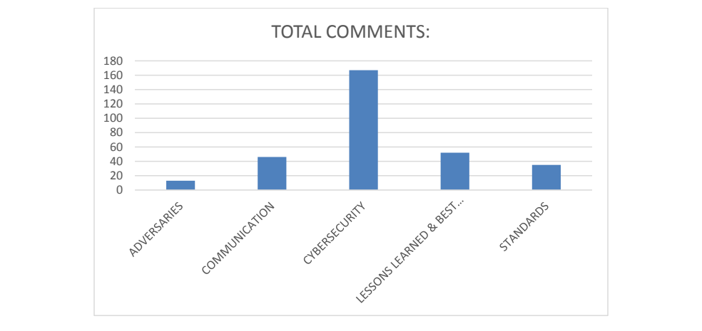

NIST IR 8192 日本語訳
英語タイトル : Enhancing Resilience of the Internet and Communications Ecosystem: A NIST Workshop Proceedings日本語タイトル : インターネットおよび通信エコシステムのレジリエンス強化：NIST ワークショップ議事録
公開日 : 2017-09-18
原文URL : https://csrc.nist.gov/pubs/ir/8192/final
翻訳編集 : 自動生成（有志による非公式の日本語訳）, 原文取得日 : 2026-10-31, 訳文 : 281 / 282 ブロック
[要約] NIST IR 8192 は、NIST が主導し、2017 年 7 月 11 日～12 日に開催されたワークショップ「Enhancing Resilience of the Internet and Communications Ecosystem」の議事録です。大統領令 13800 は、商務長官と国土安全保障長官に対し、エコシステムのレジリエンスを向上させる行動を特定し促進するための公開かつ透明なプロセスを共同で主導することを求めており、本ワークショップはそのプロセスの最初のステップとして記述されています。ワークショップは、自動化された分散型の脅威に対処する現行の解決策および新たな解決策の幅広い範囲を、利害関係者が探れるように設計されました。多様な利害関係者コミュニティから 150 人が参加し、チャタムハウス・ルールの下で実施されたため、本報告書は論点を特定の組織や産業分野と結び付けていません。
NISTIR 8192
NISTIR 8192
Enhancing Resilience of the Internet and Communications Ecosystem
インターネットおよび通信エコシステムのレジリエンス強化
A NIST Workshop Proceedings
NIST ワークショップ議事録
Tim Polk
Tim Polk
This publication is available free of charge from:
本刊行物は次のサイトから無料で入手できます。
https://doi.org/10.6028/NIST.IR.8192
https://doi.org/10.6028/NIST.IR.8192
［NIST のロゴ。公的な標章のため、この非公式サイトには掲載していません。原本 PDF を参照してください。］
NISTIR 8192
NISTIR 8192
Enhancing Resilience of the Internet and Communications Ecosystem
インターネットおよび通信エコシステムのレジリエンス強化
A NIST Workshop Proceedings
NIST ワークショップ議事録
Tim Polk
Tim Polk
Applied Cybersecurity Division Information Technology Laboratory
Applied Cybersecurity Division Information Technology Laboratory
This publication is available free of charge from:
本刊行物は次のサイトから無料で入手できます。
https://doi.org/10.6028/NIST.IR.8192
https://doi.org/10.6028/NIST.IR.8192
September 2017
2017 年 9 月
U.S. Department of Commerce Wilbur L. Ross, Jr., Secretary
米国商務省 Wilbur L. Ross, Jr. 長官
National Institute of Standards and Technology
National Institute of Standards and Technology
Kent Rochford, Acting NIST Director and Under Secretary of Commerce for Standards and Technology
Kent Rochford、NIST 所長代行兼商務次官（標準・技術担当）
National Institute of Standards and Technology Internal Report 8192 33 pages (September 2017)
National Institute of Standards and Technology Internal Report 8192 33 ページ（2017 年 9 月）
This publication is available free of charge from: https://doi.org/10.6028/NIST.IR.8192
本刊行物は次のサイトから無料で入手できます: https://doi.org/10.6028/NIST.IR.8192
Certain commercial entities, equipment, or materials may be identified in this document in order to describe an experimental procedure or concept adequately. Such identification is not intended to imply recommendation or endorsement by NIST, nor is it intended to imply that the entities, materials, or equipment are necessarily the best available for the purpose.
本書では、実験の手順や概念を適切に説明するために、特定の営利企業、設備、または資材を明示している場合があります。こうした明示は、NIST による推奨や推薦を意味するものではなく、それらの企業、資材、または設備が目的に対して必ずしも最良であることを意味するものでもありません。
There may be references in this publication to other publications currently under development by NIST in accordance with its assigned statutory responsibilities. The information in this publication, including concepts and methodologies, may be used by federal agencies even before the completion of such companion publications. Thus, until each publication is completed, current requirements, guidelines, and procedures, where they exist, remain operative. For planning and transition purposes, federal agencies may wish to closely follow the development of these new publications by NIST.
本刊行物では、NIST が法令で定められた責務に従って現在策定中の他の刊行物に言及している場合があります。概念や方法論を含む本刊行物の情報は、そうした関連刊行物の完成前であっても、連邦機関が利用してもよいです。したがって、各刊行物が完成するまでは、現行の要件、ガイドライン、および手順が存在する場合には、それらが引き続き有効です。計画および移行のため、連邦機関は、NIST によるこれらの新しい刊行物の策定状況を注意深く追うことを検討してもよいです。
Organizations are encouraged to review all draft publications during public comment periods and provide feedback to NIST. Many NIST cybersecurity publications, other than the ones noted above, are available at http://csrc.nist.gov/publications.
各組織は、公開意見募集期間中にすべてのドラフト刊行物を確認し、NIST にフィードバックを提供することが推奨されます。上記以外の NIST のサイバーセキュリティ関連刊行物の多くは、http://csrc.nist.gov/publications で入手できます。
Comments on this topic may be submitted through February 5, 2018 to:
このテーマに関する意見は、2018 年 2 月 5 日までに次の宛先へ提出できます。
National Institute of Standards and Technology Attn: Applied Cybersecurity Division, Information Technology Laboratory 100 Bureau Drive (Mail Stop 2000) Gaithersburg, MD 20899-2000 Email: distributed.threats@nist.gov
National Institute of Standards and Technology Attn: Applied Cybersecurity Division, Information Technology Laboratory 100 Bureau Drive (Mail Stop 2000) Gaithersburg, MD 20899-2000 Email: distributed.threats@nist.gov
See Section 5 of this document for additional details.
詳細は本書の第 5 節を参照してください。
All comments are subject to release under the Freedom of Information Act (FOIA).
すべての意見は、情報自由法（FOIA）に基づいて公開される場合があります。
Reports on Computer Systems Technology
コンピュータシステム技術に関する報告書
The Information Technology Laboratory (ITL) at the National Institute of Standards and Technology (NIST) promotes the U.S. economy and public welfare by providing technical leadership for the Nation’s measurement and standards infrastructure. ITL develops tests, test methods, reference data, proof of concept implementations, and technical analyses to advance the development and productive use of information technology. ITL’s responsibilities include the development of management, administrative, technical, and physical standards and guidelines for the cost-effective security and privacy of other than national security-related information in federal information systems.
National Institute of Standards and Technology（NIST）の Information Technology Laboratory（ITL）は、国の測定・標準インフラストラクチャに技術的リーダーシップを提供することで、米国の経済と公共の福祉を促進しています。ITL は、情報技術の開発と生産的な利用を推進するため、試験、試験手法、参照データ、概念実証の実装、および技術分析を開発しています。ITL の責務には、連邦情報システムにおける国家安全保障関連以外の情報のセキュリティとプライバシーを費用対効果の高い方法で確保するための、管理上、運用上、技術上、および物理上の標準とガイドラインを策定することが含まれます。
Abstract
概要
These proceedings document the July 11-12, 2017 “Enhancing Resilience of the Internet and Communications Ecosystem” workshop led by the National Institute of Standards and Technology. Executive Order 13800, "Strengthening the Cybersecurity of Federal Networks and Critical Infrastructure” required the Secretaries of Commerce and Homeland Security to “jointly lead an open and transparent process to identify and promote action by appropriate stakeholders to improve the resilience of the internet and communications ecosystem and to encourage collaboration with the goal of dramatically reducing threats perpetrated by automated and distributed attacks (e.g., botnets).” The workshop was designed to allow stakeholders to explore a range of current and emerging solutions addressing automated, distributed threats in an open and transparent manner. The workshop attracted 150 participants from diverse stakeholder communities and was conducted under Chatham House Rules.
本議事録は、National Institute of Standards and Technology が主導し、2017 年 7 月 11 日～12 日に開催されたワークショップ「Enhancing Resilience of the Internet and Communications Ecosystem」の記録です。大統領令 13800「Strengthening the Cybersecurity of Federal Networks and Critical Infrastructure」は、商務長官と国土安全保障長官に対し、「適切な利害関係者による、インターネットおよび通信エコシステムのレジリエンスを向上させる行動を特定し促進するための、また、自動化された分散型の攻撃（例: ボットネット）による脅威を劇的に減らすことを目標に協力を促すための、公開かつ透明なプロセスを共同で主導する」ことを求めました。本ワークショップは、自動化された分散型の脅威に対処する、現行および新たな幅広い解決策を、利害関係者が公開かつ透明な形で探れるように設計されました。ワークショップには多様な利害関係者コミュニティから 150 人が参加し、チャタムハウス・ルールの下で実施されました。
Keywords
キーワード
Botnet; distributed threat; distributed denial of service attack (DDoS); Internet of Things; resilience; root of trust; secure update
ボットネット、分散型脅威、分散型サービス拒否攻撃（DDoS）、モノのインターネット（Internet of Things）、レジリエンス、ルートオブトラスト、セキュアな更新
Acknowledgments
謝辞
While the National Institute of Standards and Technology (NIST) convened this workshop, its success was due to the insightful contributions offered by the 150 participants from industry, academia, standards organizations, nongovernmental organizations, and government agencies. We particularly appreciate the contributions of our panel chairs and panelists; their thought provoking discussions were critical to the success of the breakout sessions that followed.
National Institute of Standards and Technology（NIST）が本ワークショップを招集しましたが、その成功は、産業界、学術界、標準化団体、非政府組織、政府機関から参加した 150 人の洞察に富んだ貢献によるものです。特に、パネルの議長およびパネリストの貢献に感謝します。示唆に富む彼らの議論は、その後の分科会の成功に不可欠でした。
Finally, this workshop report would not have been possible without the extraordinary support we received from NIST’s National Cybersecurity Center of Excellence (NCCoE) and The MITRE Corporation, the operator of the NCCoE. The NCCoE is a public-private collaboration for accelerating the widespread adoption of integrated cybersecurity tools and technologies, and is co-sponsored by the State of Maryland and Montgomery County, Md. The NCCoE and MITRE provided subject matter experts to capture the contributions from our participants and performed a detailed analysis after the workshop, identifying key areas of interest and concern. The subject matter experts that supported this process were:
最後に、本ワークショップ報告書は、NIST の National Cybersecurity Center of Excellence（NCCoE）と、NCCoE の運営者である The MITRE Corporation から受けた格別の支援なしには実現しませんでした。NCCoE は、統合されたサイバーセキュリティのツールおよび技術の広範な導入を加速するための官民協働であり、メリーランド州とメリーランド州モンゴメリー郡が共同で後援しています。NCCoE と MITRE は、参加者の貢献を記録するための専門家を提供し、ワークショップ後に詳細な分析を行って、関心と懸念の主要な領域を特定しました。このプロセスを支援した専門家は次のとおりです。
•Brian Abe (NCCoE)
•Brian Abe (NCCoE)
•Drew Allensworth (NCCoE)
•Drew Allensworth (NCCoE)
•Brittany Biondo (Mitre)
•Brittany Biondo (Mitre)
•David Dandar (Mitre)
•David Dandar (Mitre)
•Lura Danley (Mitre)
•Lura Danley (Mitre)
•Zachary Furness (NCCoE)
•Zachary Furness (NCCoE)
•Diane Khula (Mitre)
•Diane Khula (Mitre)
•Susan Prince (NCCoE)
•Susan Prince (NCCoE)
•Julie Steinke (NCCoE)
•Julie Steinke (NCCoE)
•Caroline Tan (NCCoE)
•Caroline Tan (NCCoE)
•Aaron Temin (NCCoE)
•Aaron Temin (NCCoE)
•Teresa Thomas (NCCoE)
•Teresa Thomas (NCCoE)
•Mary Yang (NCCoE)
•Mary Yang (NCCoE)
Executive Summary
エグゼクティブサマリー
Executive Order 13800, "Strengthening the Cybersecurity of Federal Networks and Critical Infrastructure” was issued May 11, 2017. In Section 2 (d), the executive order requires the Secretaries of Commerce and Homeland Security to “jointly lead an open and transparent process to identify and promote action by appropriate stakeholders to improve the resilience of the internet and communications ecosystem and to encourage collaboration with the goal of dramatically reducing threats perpetrated by automated and distributed attacks (e.g., botnets).” The Executive Order directs the Departments to publish a preliminary report in January 2018 and submit the final report to the President by May 11, 2018.1
大統領令 13800「Strengthening the Cybersecurity of Federal Networks and Critical Infrastructure」は、2017 年 5 月 11 日に発令されました。この大統領令は第 2 節 (d) で、商務長官と国土安全保障長官に対し、「適切な利害関係者による、インターネットおよび通信エコシステムのレジリエンスを向上させる行動を特定し促進するための、また、自動化された分散型の攻撃（例: ボットネット）による脅威を劇的に減らすことを目標に協力を促すための、公開かつ透明なプロセスを共同で主導する」ことを求めています。また、両省に対し、2018 年 1 月に中間報告書を公表し、2018 年 5 月 11 日までに最終報告書を大統領に提出するよう指示しています。1
These proceedings document the July 11-12, 2017 “Enhancing Resilience of the Internet and Communications Ecosystem” workshop led by the National Institute of Standards and Technology. The workshop was one of several work streams pursued concurrently by various components of the departments to engage stakeholders and identify appropriate actions. The workshop attracted 150 participants from diverse stakeholder communities and was conducted under Chatham House Rules.
本議事録は、National Institute of Standards and Technology が主導し、2017 年 7 月 11 日～12 日に開催されたワークショップ「Enhancing Resilience of the Internet and Communications Ecosystem」の記録です。このワークショップは、利害関係者に働きかけて適切な行動を特定するために、両省の各部門がそれぞれ並行して進めたいくつかの取り組みの一つでした。ワークショップには多様な利害関係者コミュニティから 150 人が参加し、チャタムハウス・ルールの下で実施されました。
Six overarching themes emerged during the workshop discussions:
ワークショップの議論からは、次の六つの包括的なテーマが浮かび上がりました。
1.The global nature of the problem: The majority of the compromised devices that make up botnets are geographically located outside the United States. Coordinated action with international partners will be required to increase the resilience of the ecosystem against these threats.
1.問題の世界的な性質: ボットネットを構成する侵害されたデバイスの大半は、地理的に米国外にあります。これらの脅威に対するエコシステムのレジリエンスを高めるには、国際的なパートナーとの協調した行動が必要になります。
2.The availability of effective tools: The tools, processes, and practices required to significantly enhance the resilience of the ecosystem are widely available, and routinely applied in selected market sectors, but generally under-utilized.
2.効果的なツールの入手可能性: エコシステムのレジリエンスを大幅に高めるために必要なツール、プロセス、およびプラクティスは広く入手可能で、一部の市場分野では日常的に適用されていますが、全体としては十分に活用されていません。
3.The importance of securing products throughout the full lifecycle: Devices that are vulnerable at time of deployment, lack facilities to patch vulnerabilities after discovery, or remain in service after vendor support ends, make assembling botnets and distributed threats far too easy.
3.製品のライフサイクル全体にわたる保護の重要性: 展開時点で脆弱なデバイス、脆弱性の発見後にパッチを適用する仕組みを持たないデバイス、ベンダーのサポート終了後も使われ続けるデバイスがあるために、ボットネットや分散型脅威を組み立てることがあまりにも容易になっています。
4.The impact of gaps in education and awareness: Knowledge gaps in home and enterprise customers, product developers, and infrastructure operators impede the deployment of the tools, processes, and practices that would make the ecosystem more resilient. In particular, customer-friendly mechanisms to identify more secure choices analogous to the Energy Star program or vehicle crash ratings are needed to inform procurement decisions.
4.教育と認知のギャップの影響: 家庭や企業の顧客、製品開発者、インフラ運用者の知識のギャップが、エコシステムのレジリエンスを高めるツール、プロセス、およびプラクティスの導入を妨げています。特に、調達の判断に役立てるため、エナジースター・プログラムや自動車の衝突安全評価に類する、よりセキュアな選択肢を識別できる顧客に分かりやすい仕組みが必要です。
5.Conflicts between market incentives and resiliency goals: Perceived market incentives do not align with the goal of “dramatically reducing threats perpetrated by automated and distributed attacks.” Market incentives motivate product developers and vendors to minimize cost and time to market, rather than build in security or offer efficient security updates.
5.市場のインセンティブとレジリエンス目標との対立: 認識されている市場のインセンティブは、「自動化された分散型の攻撃による脅威を劇的に減らす」という目標と整合していません。市場のインセンティブは、製品開発者やベンダーに、セキュリティを組み込んだり効率的なセキュリティ更新を提供したりすることよりも、コストと市場投入までの時間を最小限にすることを促しています。
6.The need for coordinated cross-sector action: No single stakeholder community is positioned to address the problem in isolation. Contributions from all sectors will be required to significantly increase the resiliency of the ecosystem against botnets and automated distributed threats.
6.部門横断の協調した行動の必要性: この問題に単独で対処できる利害関係者コミュニティはありません。ボットネットや自動化された分散型の脅威に対するエコシステムのレジリエンスを大幅に高めるには、すべての部門からの貢献が必要になります。
The workshop provided critical input that, along with the public input received in response to the National Telecommunication and Information Administration’s Request for Comments and a report from the National Security Telecommunications Advisory Committee, will inform the development of the draft report. Implications for the January 2018 report include:
ワークショップは重要な意見をもたらしました。これは、国家電気通信情報庁（NTIA）の意見募集に寄せられた一般からの意見や、国家安全保障電気通信諮問委員会の報告書とあわせて、報告書ドラフトの作成に役立てられます。2018 年 1 月の報告書への含意には、次のものがあります。
•Actions proposed in the report will address each of the overarching themes gleaned from workshop participants.
•報告書で提案する行動は、ワークショップ参加者から得られた包括的なテーマのそれぞれに対処するものになります。
•The report will recommend one or more proposed actions for each of the stakeholder groups (i.e., infrastructure providers, product developers, enterprises, home users, academia, and government).
•報告書は、利害関係者グループ（すなわち、インフラ提供者、製品開発者、企業、家庭の利用者、学術界、政府）のそれぞれに対して、一つ以上の行動案を推奨します。
•Non-government stakeholders expect the Federal government to lead by example and promote actions by other stakeholders through incentives rather than regulation.
•非政府の利害関係者は、連邦政府が模範を示して率先し、規制ではなくインセンティブによって他の利害関係者の行動を促すことを期待しています。
•Many actions will have dependencies upon actions assigned to other stakeholders, so collaborative mechanisms will need to be identified in the report as well.
•多くの行動は、他の利害関係者に割り当てられた行動に依存するため、報告書では連携の仕組みも特定する必要があります。
•Recommendations will likely include immediate actions to increase awareness and deployment of currently available technologies, mid-term actions to create market incentives (especially to secure the full product lifecycle) and promote international coordination and collaboration, and long-term actions to develop new technologies.
•推奨事項には、現在利用可能な技術の認知と導入を高めるための即時の行動、市場のインセンティブを生み出し（特に製品ライフサイクル全体の保護のため）、国際的な調整と協力を促進するための中期の行動、そして新しい技術を開発するための長期の行動が含まれる可能性が高いです。
Further public contributions on this topic are welcomed and may be submitted to distributed.threats@nist.gov. Contributions submitted by October 15, 2017 will be considered for inclusion in the preliminary report, which will be shared with the community on or before January 5, 2018.
このテーマに関する一般からの追加の意見も歓迎しており、distributed.threats@nist.gov に提出できます。2017 年 10 月 15 日までに提出された意見は、2018 年 1 月 5 日までに関係者に共有される中間報告書への掲載を検討します。
Public contributions and comments on the preliminary report will be accepted through February 5, 2018. After the comment period has closed, a public workshop will be held in February to discuss the planned resolution of comments. Based on the public comments and discussions held at the second workshop, the Departments will complete the report for submission to the President on or before May 11, 2018.
中間報告書に対する一般からの意見とコメントは、2018 年 2 月 5 日まで受け付けます。意見募集期間の終了後、2 月に公開ワークショップを開き、意見への対応方針を議論します。両省は、一般からの意見と第 2 回ワークショップでの議論に基づいて報告書を完成させ、2018 年 5 月 11 日以前に大統領に提出します。
Table of Contents
目次
List of Appendices
付録の一覧
List of Figures
図の一覧
1. Introduction
1. はじめに
Executive Order 13800, "Strengthening the Cybersecurity of Federal Networks and Critical Infrastructure” was issued May 11, 2017. In Section 2 (d), the executive order requires the Secretaries of Commerce and Homeland Security to “jointly lead an open and transparent process to identify and promote action by appropriate stakeholders to improve the resilience of the internet and communications ecosystem and to encourage collaboration with the goal of dramatically reducing threats perpetrated by automated and distributed attacks (e.g., botnets).” The Executive Order directs the Departments to publish a preliminary report in January 2018 and submit the final report to the President by May 11, 2018.2
大統領令 13800「Strengthening the Cybersecurity of Federal Networks and Critical Infrastructure」は、2017 年 5 月 11 日に発令されました。この大統領令は第 2 節 (d) で、商務長官と国土安全保障長官に対し、「適切な利害関係者による、インターネットおよび通信エコシステムのレジリエンスを向上させる行動を特定し促進するための、また、自動化された分散型の攻撃（例: ボットネット）による脅威を劇的に減らすことを目標に協力を促すための、公開かつ透明なプロセスを共同で主導する」ことを求めています。また、両省に対し、2018 年 1 月に中間報告書を公表し、2018 年 5 月 11 日までに最終報告書を大統領に提出するよう指示しています。2
These proceedings describe the July 11-12, 2017 “Enhancing Resilience of the Internet and Communications Ecosystem” workshop led by the National Institute of Standards and Technology (NIST) as an initial step in this process. The workshop was conducted under Chatham House Rules. Participants were encouraged to share the opinions and information presented at the workshop, but were asked to refrain from identifying speakers or their affiliation. In keeping with the rules, this report does not associate issues raised within the workshop with organizations or industry sectors.
本議事録は、National Institute of Standards and Technology（NIST）が主導し、2017 年 7 月 11 日～12 日に開催されたワークショップ「Enhancing Resilience of the Internet and Communications Ecosystem」を、このプロセスの最初のステップとして記述するものです。ワークショップはチャタムハウス・ルールの下で実施されました。参加者は、ワークショップで示された意見や情報を共有することを推奨されましたが、発言者やその所属を特定しないよう求められました。このルールに従い、本報告書では、ワークショップ内で提起された論点を、特定の組織や産業分野と結び付けていません。
The workshop complemented several work streams pursued concurrently by various components of the departments to engage stakeholders and identify appropriate actions, including a Request for Comments published by the National Telecommunications and Information Administration (NTIA)3 and Department of Homeland Security (DHS) tasking for the National Security and Telecommunications Advisory Council (NSTAC).4
本ワークショップは、利害関係者に働きかけて適切な行動を特定するために両省の各部門が並行して進めたいくつかの取り組みを補完するものでした。そうした取り組みには、国家電気通信情報庁（NTIA）が公表した意見募集3や、国土安全保障省（DHS）が国家安全保障電気通信諮問委員会（NSTAC）に任務を課したこと4が含まれます。
The Proceedings is composed of five main components: this introduction; a brief recounting of the process employed to organize the workshop and develop the proceedings; a workshop summary highlighting common themes from the workshop; anticipated impacts by the information obtained from the workshop participants on the public draft of the report that Commerce and DHS will issue in January 2018; and opportunities for continued engagement on this topic.
本議事録は五つの主要な構成要素からなります。すなわち、この序論、ワークショップの開催と議事録の作成に用いたプロセスの簡単な説明、ワークショップの共通テーマを強調したワークショップの要約、ワークショップ参加者から得られた情報が 2018 年 1 月に商務省と DHS が公表する報告書の公開ドラフトに与えると見込まれる影響、およびこのテーマに関する継続的な参加の機会です。
2. Workshop Planning, Execution, and Analysis
2. ワークショップの計画、実施、および分析
Workshop Planning
ワークショップの計画
Immediately following the issuance of E.O. 13800, and concurrent with these efforts, NIST began planning a public workshop, in conjunction with our partners from NTIA and DHS, as an initial step towards engaging stakeholders in the development of the report. The workshop was designed to allow stakeholders to openly and transparently explore a range of current and emerging solutions to enhance the resilience of the Internet and communications ecosystem (the ecosystem) against automated, distributed threats. The workshop was announced on June 6, 2017 with just five weeks lead time to ensure that contributions could be reflected in the January public draft. Despite the lead time, the workshop quickly achieved full registration of 150 participants representing diverse stakeholder communities. The workshop planning team particularly appreciates the many accommodations made by our panelists, speakers, and facilitators to participate given the short lead time and unexpected disruptions of air travel.5
大統領令 13800 の発令直後から、また、これらの取り組みと並行して、NIST は NTIA および DHS のパートナーとともに、報告書の作成に利害関係者を巻き込むための最初のステップとして、公開ワークショップの計画を開始しました。ワークショップは、自動化された分散型の脅威に対するインターネットおよび通信エコシステム（以下、エコシステム）のレジリエンスを強化するため、現行および新たな解決策の幅広い選択肢を、利害関係者が公開かつ透明性のある形で探れるよう設計されました。ワークショップは、1 月の公開ドラフトに意見を反映できるよう、準備期間をわずか 5 週間として 2017 年 6 月 6 日に告知されました。準備期間が短かったにもかかわらず、ワークショップはすぐに、多様な利害関係者コミュニティを代表する 150 人の参加登録で定員に達しました。ワークショップの計画チームは、短い準備期間と航空便の予期せぬ乱れがある中で参加するために、パネリスト、講演者、およびファシリテーターが多くの配慮をしてくれたことに特に感謝しています。5
Overview of Workshop
ワークショップの概要
The agenda was structured as a series of moderated panels and breakout sessions exploring the potential contributions of five key stakeholder communities: communications infrastructure providers; product developers; customers; researchers; and governments. In addition to offering subject matter expertise, the panels were intended to stimulate discussion in the breakout sessions. Breakout facilitators were directed to guide discussion towards identification of a broad range of options for a specific stakeholder community (e.g., infrastructure providers, product developers, or network owners) to enhance the resilience of the ecosystem against automated distributed threats. Facilitators were asked to defer discussion of options specific to other communities to the appropriate session, but discussion highlighting dependencies between possible actions by different stakeholder communities was encouraged. Facilitators were instructed that breakout participants need not achieve consensus with respect to a particular option, or establish an ordering or prioritization of these options.
議題は、通信インフラ提供者、製品開発者、顧客、研究者、政府という五つの主要な利害関係者コミュニティの潜在的な貢献を探る、司会者付きのパネルと分科会の連続として構成されました。パネルは、専門知識を提供するだけでなく、分科会での議論を促すことも意図していました。分科会のファシリテーターは、特定の利害関係者コミュニティ（例: インフラ提供者、製品開発者、ネットワーク所有者）が、自動化された分散型の脅威に対するエコシステムのレジリエンスを強化するための幅広い選択肢を特定する方向へ、議論を導くよう指示されました。ファシリテーターは、他のコミュニティに固有の選択肢についての議論は適切なセッションに回すよう求められましたが、異なる利害関係者コミュニティによる行動の間の依存関係を浮き彫りにする議論は奨励されました。ファシリテーターには、分科会の参加者が特定の選択肢について合意に達する必要はなく、選択肢の順序付けや優先順位付けを行う必要もないことが伝えられました。
Analysis and Preparation of Proceedings
分析と議事録の作成
NIST’s National Cybersecurity Center of Excellence (NCCoE) provided cybersecurity subject matter experts (SMEs) to serve as scribes for the breakout sessions and performed the initial technical analysis of the collected inputs. Approximately 787 contributions were categorized into ten major categories; 313 contributions were also categorized as fitting into one of five orthogonal minor categories.
NIST の National Cybersecurity Center of Excellence（NCCoE）は、分科会の書記を務めるサイバーセキュリティの専門家（SME）を提供し、収集された意見の最初の技術的分析を行いました。約 787 件の意見が 10 の主要カテゴリに分類され、そのうち 313 件は、直交する五つの小カテゴリのいずれかにも分類されました。
The major categories were:
主要カテゴリは次のとおりです。
•Awareness
•認知
•Business Challenges
•ビジネス上の課題
•Product Development & Lifecycle
•製品開発とライフサイクル
•Complexity of Ecosystem
•エコシステムの複雑さ
•Consumer Role
•消費者の役割
•Governance
•ガバナンス
•Information Sharing, Collaboration & Privacy
•情報共有、協力、およびプライバシー
•Data
•データ
•Metrics
•メトリクス
•Fundamental and Emerging Technologies
•基盤技術と新興技術
Scribes categorized the discussion topics raised in their breakout sessions according to these categories, and aggregated percentages were developed. The distribution of the 787 contributions is depicted in Figure 1, below. Nearly half of the contributions were characterized as business challenges or governance issues.
書記は、分科会で提起された議論のトピックをこれらのカテゴリに分類し、集計割合を算出しました。787 件の意見の分布を、下の図 1 に示します。意見のほぼ半数は、ビジネス上の課題またはガバナンスの問題に分類されました。
![Vertical bar chart titled “TOTAL COMMENTS:”. The vertical axis runs from 0 to 200 in steps of 20. Ten bars, one per major category, labeled AWARENESS, BUSINESS CHALLENGES, PRODUCT DEVELOPMENT…, COMPLEXITY OF ECOSYSTEM, CONSUMER ROLE, GOVERNANCE, INFO SHARING,…, DATA, METRICS, FUNDAMENTAL AND…. The tallest bars are BUSINESS CHALLENGES and GOVERNANCE (each about 175); INFO SHARING and FUNDAMENTAL AND… are about 70–85; AWARENESS, PRODUCT DEVELOPMENT and COMPLEXITY OF ECOSYSTEM are about 60; CONSUMER ROLE, DATA and METRICS are below 40 (values read approximately from the bars; no data labels are printed).](assets/ir-8192/p0011-drawing-01.png)
「TOTAL COMMENTS:」という題の縦棒グラフです。縦軸は 0 から 200 まで 20 刻みです。主な分類ごとに 10 本の棒があり、ラベルは AWARENESS、BUSINESS CHALLENGES、PRODUCT DEVELOPMENT…、COMPLEXITY OF ECOSYSTEM、CONSUMER ROLE、GOVERNANCE、INFO SHARING,…、DATA、METRICS、FUNDAMENTAL AND… です。最も高いのは BUSINESS CHALLENGES と GOVERNANCE（それぞれ約 175）で、INFO SHARING と FUNDAMENTAL AND… が約 70〜85、AWARENESS、PRODUCT DEVELOPMENT、COMPLEXITY OF ECOSYSTEM が約 60、CONSUMER ROLE、DATA、METRICS が 40 未満です（値は棒の高さからのおおよその読み取りで、原本に数値の表示はありません）。
Figure 1. Distribution of Contributions as Characterized by Scribes
図 1. 書記が分類した意見の分布
The minor categories were:
小カテゴリは次のとおりです。
•Adversaries
•敵対者
•Communication
•コミュニケーション
•Cybersecurity
•サイバーセキュリティ
•Lessons & Best Practices
•教訓とベストプラクティス
•Standards
•標準
Scribes categorized the discussion topics raised in their breakout sessions according to these minor categories, and aggregated percentages were developed. The distribution of the 313 contributions is depicted in Figure 2 below. More than half of the comments assigned to minor categories were deemed cybersecurity issues, with lessons learned, communication, and standards getting the bulk of the remaining comments.
書記は、分科会で提起された議論のトピックをこれらの小カテゴリに分類し、その集計割合が算出されました。313 件の意見の分布を、下の図 2 に示します。小カテゴリに割り当てられたコメントの半数超はサイバーセキュリティの問題とみなされ、残りのコメントの大半は、教訓、コミュニケーション、および標準が占めました。

「TOTAL COMMENTS:」という題の縦棒グラフです。縦軸は 0 から 180 まで 20 刻みです。副分類ごとに 5 本の棒があり、ラベルは ADVERSARIES、COMMUNICATION、CYBERSECURITY、LESSONS LEARNED & BEST…、STANDARDS です。CYBERSECURITY が際立って高く（約 165）、LESSONS LEARNED & BEST…（約 50）、COMMUNICATION（約 45）、STANDARDS（約 35）が続き、ADVERSARIES が最も低くなっています（約 12）（値は棒の高さからのおおよその読み取りで、原本に数値の表示はありません）。
Figure 2. Characterization of Contributions According to Minor Topic Areas
図 2. 小分類の話題領域別に見た意見の分類
NIST subject matter experts based this proceedings on the raw notes provided by the NCCoE scribes, bulleted lists of highlights prepared by the scribes, and the NCCoE supplied analysis, as well as the NIST SMEs’ own personal notes.
NIST の専門家は、NCCoE の書記が提供した生のメモ、書記が作成した要点の箇条書き、NCCoE が提供した分析、および NIST の専門家自身の個人的なメモに基づいて、本議事録をまとめました。
3. Workshop Summary
3. ワークショップの要約
This section summarizes the issues raised by presenters and workshop participants over the course of the workshop and is presented in two subsections.
本節では、ワークショップの間に発表者と参加者が提起した論点を、二つの小節に分けて要約します。
•The first subsection presents six overarching themes that emerged from the discussions. These themes apply across multiple sectors, and were raised by different participants on multiple occasions. While consensus was not judged and should not be assumed, few spoke against these concepts.
•最初の小節では、議論から浮かび上がった六つの包括的なテーマを示します。これらのテーマは複数の部門にまたがり、異なる参加者によって複数回提起されました。合意の有無は判定しておらず、合意があったものとみなすべきではありませんが、これらの考え方に反対した人はほとんどいませんでした。
•The second subsection offers sector-specific (i.e., specific to a stakeholder community) issues and observations. In some cases, this represents a more detailed view of the overarching themes, but in others the concepts are simply unique to that sector. The sector-specific observations are organized by workshop panel.
•2 番目の小節では、部門別（すなわち、特定の利害関係者コミュニティに固有）の論点と所見を示します。包括的なテーマをより詳細に見たものもありますが、その部門に固有の考え方にすぎないものもあります。部門別の所見は、ワークショップのパネルごとに整理しています。
While the workshop scope included the full range of automated distributed threats, it should be noted that conversation frequently focused on the Internet of Things. It was clear that the Mirai botnet was “top of mind” for many participants, and provided a shared context for discussions on securing the product lifecycle, education and awareness, and many other topics. The IoT context is only reiterated in the summaries that follow where the issues or observations were specific to IoT (as opposed to illustrative framing.)
ワークショップの対象範囲は、自動化された分散型の脅威の全体に及んでいましたが、議論はしばしばモノのインターネット（IoT）に集中していたことに留意すべきです。Mirai ボットネットが多くの参加者にとって「頭から離れない」存在であり、製品ライフサイクルの保護、教育と認知、その他多くの話題についての議論に共通の背景を与えていたことは明らかでした。以下の要約で IoT の文脈をあらためて述べるのは、論点や所見が（例示のための枠組みとしてではなく）IoT に固有だった場合に限ります。
As noted previously, the workshop was conducted under Chatham House Rules, and facilitators were directed to focus on surfacing options for action rather than reaching consensus or obtaining objective measures of support. This summary uses the phrases “several participants,” “a number of participants,” and “many participants” to denote our subjective assessment of increasing levels of support or interest beyond the normal baseline.
前述のとおり、ワークショップはチャタムハウス・ルールの下で実施され、ファシリテーターは、合意に達することや支持の客観的な尺度を得ることではなく、行動の選択肢を引き出すことに集中するよう指示されました。本要約では、「数人の参加者」「複数の参加者」「多くの参加者」という表現を用いて、通常の水準を超える支持や関心の高まりを、主観的な評価として示しています。
Overarching Themes
包括的なテーマ
Six overarching themes were encountered throughout the workshop discussions6:
ワークショップの議論を通じて、六つの包括的なテーマが見られました6。
1.The global nature of the problem;
1.問題の世界的な性質
2.The availability of effective tools;
2.効果的なツールの入手可能性
3.The importance of securing products throughout the full lifecycle;
3.製品のライフサイクル全体にわたる保護の重要性
4.The impact of gaps in education and awareness;
4.教育と認知のギャップの影響
5.Conflicts between market incentives and resilience goals; and
5.市場のインセンティブとレジリエンス目標との対立
6.The need for coordinated cross-sector action.
6.部門横断の協調した行動の必要性
Workshop participants noted repeatedly that botnets and distributed threats are a global problem. While there are exceptions, the majority of the compromised devices that make up botnets are geographically located outside the United States. Actions that increase the security of devices sold in the United States, or that protect against threats from domestic telecommunications traffic, can only address a portion of the problem. Coordinated action with international partners will be required to increase the resilience of the ecosystem against these threats. While resolution will require a global approach, there was broad agreement that the United States could and should lead the way in the fight against these threats, acting by example and promoting appropriate norms of behavior.
ワークショップの参加者は、ボットネットと分散型の脅威が世界的な問題であることを繰り返し指摘しました。例外はあるものの、ボットネットを構成する侵害されたデバイスの大半は、地理的に米国外にあります。米国で販売されるデバイスのセキュリティを高める行動や、国内の電気通信トラフィックからの脅威を防ぐ行動では、問題の一部にしか対処できません。これらの脅威に対するエコシステムのレジリエンスを高めるには、国際的なパートナーとの協調した行動が必要になります。解決には世界規模のアプローチが必要になりますが、米国はこうした脅威との闘いで先頭に立つことができ、また立つべきであり、模範を示して適切な行動規範を促進すべきだという点で、幅広い合意がありました。
There was also broad agreement that opportunities for immediate action were available. To quote one speaker, “We are not starting from a blank sheet of paper.” By applying a suite of well-known and effective tools, processes, and practices, we can significantly enhance the resilience of the ecosystem. These tools have proven their value in the personal computing domain. However, these technologies and processes are not included in the common practices for product development and deployment in many other sectors. A set (or sets) of minimum standards or requirements needs to be established, although perhaps not formally, to ensure that best practices are applied across all sectors.
また、すぐに行動できる機会があることについても、幅広い合意がありました。ある講演者の言葉を引用すれば、「私たちは白紙の状態から始めるわけではありません」。よく知られた効果的なツール、プロセス、およびプラクティスの一式を適用することで、エコシステムのレジリエンスを大幅に高めることができます。これらのツールは、パーソナルコンピューティングの領域ではその価値が実証されています。しかし、これらの技術やプロセスは、他の多くの部門では、製品開発や展開の一般的なプラクティスに含まれていません。ベストプラクティスがすべての部門で適用されるよう、必ずしも正式なものでなくても、最低限の標準または要件の一式（または複数の一式）を確立する必要があります。
Addressing the entire product/network lifecycle with these tools, processes, and practices was another overarching theme. The importance of building security in from the beginning, rather than bolting it on later, was a widely shared belief. Far too many products are shipped with known vulnerabilities; these products may be detected, attacked, and compromised within minutes of deployment. Secure update mechanisms are needed to address vulnerabilities discovered during the normal product lifetime. Clear and effective processes to address end-of-life issues are also needed, as vulnerabilities in obsolete products cannot be addressed, ensuring that adversaries have a reliable starting point when penetrating an enterprise or establishing a botnet.
これらのツール、プロセス、およびプラクティスを、製品およびネットワークのライフサイクル全体に適用することも、もう一つの包括的なテーマでした。セキュリティを後から付け足すのではなく、最初から組み込むことの重要性は、広く共有された信念でした。既知の脆弱性を抱えたまま出荷される製品があまりにも多く、そうした製品は、展開から数分のうちに検出され、攻撃され、侵害されることがあります。通常の製品寿命の間に発見された脆弱性に対処するには、セキュアな更新の仕組みが必要です。陳腐化した製品の脆弱性には対処できず、攻撃者が企業に侵入したりボットネットを構築したりする際の確実な足がかりが残ってしまうため、サポート終了の問題に対処する明確で効果的なプロセスも必要です。
Participants noted a systemic education and awareness problem. Almost 6 % of the recommendations/comments during workshop breakout sessions focused on the importance of education and awareness. Many attendees cited transportation safety, where seatbelt usage and crash test ratings have led to better outcomes, as an education and awareness success story. Others cited the same sector as a cautionary tale, with long lead times before widespread acceptance of seat belts and other technological improvements. Energy Star was also the subject of repeated discussion, with simple metrics for consumers. An independent body to test and certify security-relevant features, and offer a more accessible rating scheme, was frequently cited as an important step towards consumer identification of products with strong security features.
参加者は、教育と認知に関する体系的な問題を指摘しました。ワークショップの分科会での提言・コメントの約 6 % は、教育と認知の重要性に焦点を当てていました。多くの出席者が、シートベルトの着用率や衝突試験の評価がより良い成果につながった交通安全を、教育と認知の成功例として挙げました。一方で、同じ分野を、シートベルトなどの技術的改善が広く受け入れられるまでに長い期間を要した教訓として挙げる人もいました。消費者向けの分かりやすい指標を備えたエナジースターも、繰り返し話題になりました。セキュリティに関連する機能を試験・認証し、より利用しやすい格付けの仕組みを提供する独立機関は、強力なセキュリティ機能を備えた製品を消費者が識別できるようにするための重要なステップとして、しばしば挙げられました。
Perceived market incentives do not align with our security and resilience goals, according to many workshop participants. Product developers and vendors minimize cost and time to market, rather than build in security or offer efficient security updates. Much of the discussion focused on techniques to create market incentives, such as independent product certification, but some felt that more active government intervention (e.g., regulation) would eventually be needed to overcome market failures. However, participants noted that regulatory compliance can also be at odds with our security and resilience goals.7
多くのワークショップ参加者によれば、認識されている市場のインセンティブは、セキュリティとレジリエンスの目標と整合していません。製品開発者やベンダーは、セキュリティを組み込んだり効率的なセキュリティ更新を提供したりするのではなく、コストと市場投入までの時間を最小限にしています。議論の多くは、独立した製品認証など、市場のインセンティブを生み出す手法に集中しましたが、市場の失敗を克服するには、最終的により積極的な政府の介入（例: 規制）が必要になるだろうと考える人もいました。ただし参加者は、規制への準拠も、セキュリティとレジリエンスの目標と相反する場合があると指摘しました。7
Another theme was the inability of any particular sector to impact the resiliency of the ecosystem in isolation. Infrastructure providers can improve the efficacy of anti-DDoS mechanisms, but they can always be overcome by larger numbers of devices. Device manufacturers can improve the quality of their products, but we do not have the technology required to build perfect products, so some devices will always be vulnerable to compromise. Similarly, enterprise owners can increase their investments in security but some of their systems will be vulnerable, and adversaries have the entire Internet to launch attacks upon the enterprise. Researchers can develop better technologies, but security improvements are only realized if vendors include these technologies in products, customers purchase these products, and appropriately deploy them. Contributions from all sectors will be required to significantly increase the resilience of the ecosystem against botnets and automated distributed threats.
もう一つのテーマは、どの部門も単独ではエコシステムのレジリエンスに影響を与えられないということでした。インフラ提供者は DDoS 対策の仕組みの有効性を高められますが、より多数のデバイスによって常に突破される可能性があります。デバイス製造者は製品の品質を高められますが、完璧な製品を作るのに必要な技術はないため、一部のデバイスは常に侵害されやすいままです。同様に、企業の所有者はセキュリティへの投資を増やせますが、それでも一部のシステムは脆弱なままであり、攻撃者は企業への攻撃を仕掛けるためにインターネット全体を利用できます。研究者はより優れた技術を開発できますが、セキュリティの改善が実現するのは、ベンダーがそれらの技術を製品に取り入れ、顧客がそれらの製品を購入して適切に展開した場合に限られます。ボットネットや自動化された分散型の脅威に対するエコシステムのレジリエンスを大幅に高めるには、すべての部門からの貢献が必要になります。
Sector Specific Summaries
部門別の要約
This section reviews issues and observations from the workshop from the perspective of each stakeholder community in turn. In some cases, this represents a more detailed or nuanced view of the overarching themes, but in others the concepts are simply unique to that sector.
本節では、ワークショップでの論点と所見を、利害関係者コミュニティごとに順に見ていきます。包括的なテーマをより詳細に、あるいはより繊細に見たものもありますが、その部門に固有の考え方にすぎないものもあります。
Infrastructure
インフラストラクチャ
The infrastructure provider sector was the subject of the first workshop panel and the following breakout session. The panel focused on the current state of the infrastructure, trends, and current and promising approaches to mitigate automated distributed threats such as DDoS, with particular focus on botnets and IoT.
インフラ提供者の部門は、最初のワークショップのパネルとそれに続く分科会の主題でした。パネルは、インフラの現状、動向、および DDoS などの自動化された分散型の脅威（特にボットネットと IoT）を緩和するための現在の手法と有望な手法に焦点を当てていました。
Several participants noted that the Internet infrastructure is far more resilient today, and withstands DDoS attacks of previously unthinkable magnitude on a near-daily basis. This demonstrates both the effectiveness of current tools and the arms race nature of DDoS protection.
数人の参加者は、インターネットのインフラは現在でははるかにレジリエントになっており、以前は考えられなかった規模の DDoS 攻撃にほぼ毎日耐えていると指摘しました。これは、現行のツールが有効であることと、DDoS 対策が軍拡競争の性質を持つことの両方を示しています。
Participants explicitly identified a number of tools and techniques for DDoS protection; these are listed below with a brief discussion of strengths and limitations. (Order of presentation has no significance.)
参加者は、DDoS 対策のための多くのツールと技術を明示的に挙げました。それらを、長所と限界の簡単な議論とともに以下に示します。（提示の順序に意味はありません。）
•Ingress/Egress filtering: Many participants referred to the Internet Engineering Task Force (IETF) Best Current Practice (BCP) 38, “Network Ingress Filtering,” and BCP 84, “Ingress Filtering for Multi-Homed Networks.” Historically, DDoS attacks have relied on network address spoofing, where compromised systems assert source addresses that do not exist on the local network, to hide the location of the attackers’ resources.8 By traffic filtering at enterprise boundaries and discarding traffic that is clearly illegitimate, it is possible to limit the effectiveness and scope of these attacks.
•イングレス/エグレスフィルタリング: 多くの参加者が、Internet Engineering Task Force（IETF）の Best Current Practice（BCP）38「Network Ingress Filtering」と BCP 84「Ingress Filtering for Multi-Homed Networks」に言及しました。従来、DDoS 攻撃は、攻撃者のリソースの場所を隠すために、侵害されたシステムがローカルネットワークに存在しない送信元アドレスを名乗るネットワークアドレスのなりすましに依存してきました。8 企業の境界でトラフィックをフィルタリングし、明らかに不正なトラフィックを破棄することで、こうした攻撃の有効性と範囲を抑えることが可能です。
BCP 38 and BCP 84 were published in 2000 and 2004, respectively, but adoption and deployment has been slow and uneven. While the level of current support was debated at the workshop, there was widespread support for ubiquitous deployment of traffic filtering for edge networks. There was brief discussion of the limitations of filtering within the Internet backbone, where asymmetric routing (where traffic between two endpoints follows separate paths in each direction) complicates differentiation of legitimate traffic from that with spoofed network addresses.
BCP 38 と BCP 84 はそれぞれ 2000 年と 2004 年に公表されましたが、採用と展開は遅く、不均一に進んできました。現在の支持の水準についてはワークショップでも議論がありましたが、エッジネットワークでトラフィックフィルタリングを広く展開することには幅広い支持がありました。インターネットのバックボーン内でのフィルタリングの限界についても簡単な議論がありました。バックボーンでは、非対称ルーティング（二つのエンドポイント間のトラフィックが、方向ごとに別の経路をたどること）のために、正当なトラフィックと、ネットワークアドレスが偽装されたトラフィックとの区別が難しくなります。
•Off-premise DDoS protection services: ISPs are offering off-premise DDoS protection services for customers, where traffic is rerouted and filtered before delivery to the customer network. DDoS protection services require provisioning significant additional resources (in terms of specialized systems and extra bandwidth) to absorb and process the projected additional traffic. These services have proven effective in numerous cases, but service providers are continually forced to increase the level of additional resources as botnets grow larger and total bandwidth of attacks increases.
•オフプレミスの DDoS 防御サービス: ISP は、顧客向けにオフプレミスの DDoS 防御サービスを提供しています。このサービスでは、トラフィックが経路変更され、顧客のネットワークに届く前にフィルタリングされます。DDoS 防御サービスでは、見込まれる追加トラフィックを吸収して処理するために、（専用システムや追加の帯域幅という面で）相当量の追加リソースを用意する必要があります。これらのサービスは多くの事例で有効であると実証されていますが、ボットネットが大規模化し、攻撃の総帯域幅が増えるにつれて、サービス提供者は追加リソースの水準を引き上げ続けざるを得ません。
The effectiveness of these services is limited in part by customer awareness. DDoS protection services require provisioning significant additional resources (in terms of specialized systems and extra bandwidth) so they are not featured in basic network service offerings. Customers may not be aware of the risks presented by DDoS attacks until they become a victim, or that these services are even available. Even where an enterprise has the knowledge of and desire to procure anti-DDoS services, architectural changes may be required to optimize the level of security achieved.
これらのサービスの有効性は、一つには顧客の認知によって制限されます。DDoS 防御サービスでは相当量の追加リソースを用意する必要があるため、基本的なネットワークサービスの提供内容には含まれません。顧客は、被害に遭うまで DDoS 攻撃がもたらすリスクを認識していなかったり、これらのサービスが利用可能であることすら知らなかったりする場合があります。企業が DDoS 対策サービスについて知識を持ち、調達したいと望んでいる場合でも、達成されるセキュリティの水準を最適化するために、アーキテクチャの変更が必要になる場合があります。
(Note: Communications between customers and service providers presents another challenge to the effectiveness of Off-Premise DDoS Protection services. See Realtime signaling, below.)
（注: 顧客とサービス提供者の間の通信は、オフプレミスの DDoS 防御サービスの有効性に対するもう一つの課題です。後述の「リアルタイムシグナリング」を参照してください。）
•On-Premise DDoS Protection: Where DDoS attacks are tailored to target an enterprise’s critical resources, such as key applications or corporate firewall, local protection mechanisms may be more effective. These “On-Premise” services are now available as a supplement to the traditional service provider (off-premise) DDoS protection services offered by ISPs. As above, customer awareness of risks and available technologies is required as a precursor to enhancing resilience through these technologies.
•オンプレミスの DDoS 防御: DDoS 攻撃が、主要なアプリケーションや企業のファイアウォールなど、企業の重要なリソースを狙って調整されている場合は、ローカルの防御の仕組みのほうが有効な場合があります。こうした「オンプレミス」のサービスは、ISP が提供する従来のサービス提供者側（オフプレミス）の DDoS 防御サービスを補うものとして、現在利用可能になっています。上記と同様に、これらの技術でレジリエンスを高めるための前提として、リスクと利用可能な技術に対する顧客の認知が必要です。
•Realtime Signaling: As noted above, communications with DDoS protection services and devices during attacks can be problematic. Several attendees highlighted the Internet Engineering Task Force’s DDoS Open Threat Signaling (DOTS) Working Group as a promising source for solutions in the near future. DOTS is currently developing a suite of standards for the realtime signaling of DDoS related telemetry and threat handling requests over links that may be congested by attack traffic.
•リアルタイムシグナリング: 前述のとおり、攻撃中の DDoS 防御サービスやデバイスとの通信には問題が生じることがあります。数人の出席者は、Internet Engineering Task Force の DDoS Open Threat Signaling（DOTS）ワーキンググループを、近い将来に解決策をもたらす有望な情報源として挙げました。DOTS は現在、攻撃トラフィックで輻輳している可能性のあるリンク上で、DDoS 関連のテレメトリと脅威対応の要求をリアルタイムでシグナリングするための標準群を策定しています。
Participants also highlighted a number of specific challenges for infrastructure-based approaches to enhancing the resiliency of the ecosystem.
参加者はまた、エコシステムのレジリエンスを高めるためのインフラベースのアプローチに対する、いくつかの具体的な課題を挙げました。
•Global Coordination: The Internet is a global infrastructure, as is the threat. Infrastructure-based approaches demand close cooperation and coordination. Participants indicated that cooperation amongst domestic peers has become fairly robust, but the international communication and cooperation has been uneven. There are efforts to establish norms and codify practices, but these efforts are lagging the problem.
•世界規模の調整: インターネットは、脅威と同様に、世界規模のインフラです。インフラベースのアプローチには、緊密な協力と調整が求められます。参加者は、国内の同業者間の協力はかなり強固になっているものの、国際的なコミュニケーションと協力は不均一であると述べました。規範を確立し、プラクティスを成文化する取り組みはありますが、問題の進行に追いついていません。
Participants noted that almost fifty companies have agreed to the Mutually Agreed Norms for Routing Security (MANRS), and this agreement could be considered a model for a botnet-specific effort. Others pointed to the U.S. Anti-Bot Code of Conduct for Internet Service Providers (ABCs for ISPs) developed by the Federal Communications Commission’s Communications Security, Reliability, and Interoperability Council (“CSRIC”).9
参加者は、約 50 社が Mutually Agreed Norms for Routing Security（MANRS）に合意しており、この合意はボットネットに特化した取り組みのモデルになりうると指摘しました。また、連邦通信委員会の Communications Security, Reliability, and Interoperability Council（「CSRIC」）が策定した U.S. Anti-Bot Code of Conduct for Internet Service Providers（ABCs for ISPs）を挙げる人もいました。9
•Complexity: Infrastructure issues are exacerbated by increasing complexity of the Internet – not just the advent of IoT, but also the expansion of multi-tenant infrastructure. The standards and practices that are widely applied to PCs and servers have not been uniformly applied to the IoT space, with unfortunate consequences, and smaller ISPs do not have the capacity to implement the same standards and practices as the large ISPs. Even where an enterprise has the knowledge of and desire to procure anti-DDoS services, architectural changes may be required to optimize the level of security achieved.
•複雑さ: インフラの問題は、インターネットの複雑さが増していることによって悪化しています。これは IoT の登場だけでなく、マルチテナントインフラの拡大も含みます。PC やサーバーに広く適用されている標準やプラクティスは IoT の領域には一様に適用されておらず、望ましくない結果を招いています。また、小規模な ISP には、大規模な ISP と同じ標準やプラクティスを実装する能力がありません。企業が DDoS 対策サービスについて知識を持ち、調達したいと望んでいる場合でも、達成されるセキュリティの水準を最適化するために、アーキテクチャの変更が必要になる場合があります。
•Metrics: Usable metrics to characterize attacks and document their severity are lacking. One participant noted that the Federal Bureau of Investigation had developed a 75 attribute framework to describe distributed attacks, but that completing this description took so long that attacks were often over. Usable and widely recognized metrics are needed to facilitate coordination and cooperation.
•メトリクス: 攻撃を特徴付け、その深刻度を記録するための、使えるメトリクスが不足しています。ある参加者は、連邦捜査局（FBI）が分散型攻撃を記述するための 75 属性のフレームワークを開発したものの、その記述を完成させるのに時間がかかり、記述が終わる頃には攻撃がすでに終わっていることが多かったと述べました。調整と協力を促すには、使いやすく広く認知されたメトリクスが必要です。
•Inter-dependencies: Participants noted a number of dependencies with other sectors. Poor security attributes of edge devices, and especially of IoT devices, make it extremely difficult for the infrastructure to protect against these attacks.
•相互依存性: 参加者は、他の部門との多くの依存関係を指摘しました。エッジデバイス、特に IoT デバイスのセキュリティ属性が貧弱なため、インフラがこれらの攻撃から守ることは極めて困難になっています。
•Education and Awareness: Customer education and awareness is urgently needed; when ISPs contact enterprises to alert them to problems, the enterprises are often ill-equipped to comprehend the problem or execute their own responsibilities. They generally assume that their ISP “was going to handle that”, whatever “that” might be.
•教育と意識向上: 顧客の教育と意識向上が緊急に必要です。ISP が問題を警告するために企業に連絡しても、企業はその問題を理解したり、自らの責任を果たしたりする準備ができていないことがよくあります。企業は一般に、「それ」が何であれ、ISP が「それを処理してくれるはずだった」と思い込んでいます。
•Education and awareness for operational staff was also considered problematic. In particular, some felt that weak deployment of BCP 38 filtering at foreign ISPs, smaller domestic ISPs, and enterprise maintained BGP routers was largely a result of skills gaps within those organizations.
•運用担当者の教育と認知も、問題があると考えられました。特に、海外の ISP、小規模な国内 ISP、および企業が管理する BGP ルーターで BCP 38 フィルタリングの展開が不十分なのは、主にそれらの組織内のスキルのギャップの結果だと考える人もいました。
Product Manufacturer
製品製造者
The second panel and breakout session explored current efforts and future opportunities for network component and device manufacturers (including IoT solution providers) to address the root causes of recent botnets (unconstrained network access, hard coded passwords, and buggy software). The discussion included products developed for both enterprise and home use.
2 番目のパネルと分科会では、ネットワークコンポーネントおよびデバイスの製造者（IoT ソリューション提供者を含む）が、最近のボットネットの根本原因（無制限のネットワークアクセス、ハードコードされたパスワード、バグのあるソフトウェア）に対処するための現在の取り組みと将来の機会を探りました。議論には、企業向けと家庭向けの両方の製品が含まれていました。
There were two general characterizations of the product development problem. The most prevalent characterization indicated the number of vulnerabilities in products must be significantly reduced to make it harder to compromise devices en masse and launch large attacks. On the other hand, products will never be perfect, so some participants felt we should concentrate on technologies that limit the damage from compromised devices. The two characterizations are not in conflict, and most seemed to think both avenues should be pursued.
製品開発の問題には、二つの一般的な捉え方がありました。最も多かった捉え方は、デバイスを大量に侵害して大規模な攻撃を仕掛けることを難しくするために、製品の脆弱性の数を大幅に減らさなければならないというものです。一方で、製品が完璧になることはないため、侵害されたデバイスからの被害を抑える技術に注力すべきだと考える参加者もいました。二つの捉え方は対立しておらず、大半は両方の方向を追求すべきだと考えているようでした。
With respect to making it harder to compromise systems, many participants emphasized that this was a product lifecycle issue. It is critical, in their opinion, to manage the vulnerability of devices from initial product shipment, through use, to end-of-life. A number of techniques that reduce the vulnerability of products were discussed:
システムを侵害しにくくするという点について、多くの参加者は、これは製品ライフサイクルの問題であると強調しました。彼らの意見では、最初の製品出荷から使用を経てサポート終了に至るまで、デバイスの脆弱性を管理することが重要です。製品の脆弱性を減らす多くの技術が議論されました。
•To reduce the vulnerability in products at initial deployment, participants suggested increased application of a number of complementary tools and best practices. For example, secure by design development processes are more likely to result in default settings that are generally secure and avoid hard-coded administrative passwords and other common pitfalls. Security-sensitive software development toolchains can eliminate common coding errors, such as most buffer overflows.
•初期展開時の製品の脆弱性を減らすために、参加者は、相互に補完する多くのツールとベストプラクティスの適用を増やすことを提案しました。たとえば、セキュアバイデザインの開発プロセスでは、一般にセキュアな初期設定になり、ハードコードされた管理者パスワードなどのよくある落とし穴を避けられる可能性が高くなります。セキュリティを重視したソフトウェア開発ツールチェーンは、バッファオーバーフローの大半など、よくあるコーディングエラーを排除できます。
•Even when developed using secure-by-design methodologies and security-focused toolchains, vulnerabilities in software are likely to be detected, continuing for months or years after the product is first deployed. Malware targeting these vulnerabilities is often widely available in days or weeks after detection. To manage the vulnerability of these products, many participants asserted that secure and preferably automatic update is absolutely essential. Additionally, they asserted that manufacturers should commit to patching security vulnerabilities for some minimum period after deployment.
•セキュアバイデザインの手法やセキュリティを重視したツールチェーンで開発しても、ソフトウェアの脆弱性は検出される可能性が高く、製品の初回展開後も数か月から数年にわたって続きます。こうした脆弱性を狙うマルウェアは、検出から数日または数週間で広く入手できるようになることがよくあります。これらの製品の脆弱性を管理するために、多くの参加者は、セキュアで、できれば自動的な更新が絶対に不可欠であると主張しました。さらに、製造者は展開後の一定の最低期間、セキュリティ脆弱性へのパッチ適用を約束すべきだと主張しました。
•Roots of trust are a complementary technology that was cited by numerous participants. By providing a set of basic and highly trusted functions, we can increase assurance that software and firmware are unchanged or were only changed through secure update mechanisms. The Trusted Platform Module (TPM) is a widely available example, but may be too costly for inexpensive devices. New efforts, such as the Trusted Computing Group (TCG) Device Identity Composition Engine (DICE) may expand the scope of products that incorporate these technologies by providing a basis for device identity and verifying software updates have been installed. Devices need an identity issued by the manufacturer so there is a way to know what kind of device it is and what configuration, software and patches are intended for the device. The draft NIST SP 800-193 publication from May 30, 2017 describes roots of trust for protection, detection and recovery that could be applied in the IoT space as building blocks to remotely recover devices. People are unlikely to individually manage IoT devices, so automated recovery is needed.
•ルートオブトラストは、多数の参加者が挙げた補完的な技術です。基本的で信頼性の高い一連の機能を提供することで、ソフトウェアとファームウェアが変更されていないこと、または変更がセキュアな更新の仕組みを通じてのみ行われたことへの保証を高められます。Trusted Platform Module（TPM）は広く入手できる例ですが、安価なデバイスにはコストが高すぎる場合があります。Trusted Computing Group（TCG）の Device Identity Composition Engine（DICE）のような新しい取り組みは、デバイスの識別と、ソフトウェア更新がインストールされたことの検証の基盤を提供することで、これらの技術を取り入れる製品の範囲を広げる可能性があります。デバイスには、どの種類のデバイスで、どの構成、ソフトウェア、およびパッチがそのデバイスに想定されているかを知る手段が必要なため、製造者が発行する識別情報が必要です。2017 年 5 月 30 日付の NIST SP 800-193 のドラフト刊行物は、IoT の領域で、デバイスをリモートで復旧するための構成要素として適用できる、防御・検知・復旧のためのルートオブトラストを説明しています。人が IoT デバイスを個別に管理することは考えにくいため、自動化された復旧が必要です。
•End-of-Life Issues and Unlicensed Software: Participants also highlighted the vulnerabilities associated with devices that are not supported by their manufacturer. In such cases, updates are no longer being released (or perhaps never were) so vulnerabilities persist indefinitely. This has parallels with unlicensed software, where security updates are generally unavailable.
•サポート終了とライセンスのないソフトウェアの問題: 参加者はまた、製造者のサポートを受けられないデバイスに伴う脆弱性を指摘しました。そのような場合は、更新がもはや公開されない（あるいは最初から公開されなかった）ため、脆弱性が無期限に残ります。これは、セキュリティ更新が一般に入手できない、ライセンスのないソフトウェアと類似しています。
Participants lauded Microsoft’s decision to update Windows XP to mitigate the WannaCry exploit, in spite of ending support three years earlier, but felt this was an exceptional case. Participants regarded past proposals for general solutions to end-of-life problems, such as releasing software for unsupported products to the open source community, as impractical.
参加者は、サポートが 3 年前に終了していたにもかかわらず、WannaCry のエクスプロイトを緩和するために Windows XP を更新した Microsoft の決定を称賛しましたが、これは例外的な事例だと考えました。参加者は、サポート対象外の製品のソフトウェアをオープンソースコミュニティに公開するなど、サポート終了の問題に対する一般的な解決策のこれまでの提案を、非現実的であるとみなしました。
Participants noted that the techniques above are widely known and well understood. They are applied broadly in some sectors (e.g., operating systems) but almost never in others (e.g., the Internet of Things). A number of impediments and root causes were suggested, including:
参加者は、上記の技術が広く知られ、十分に理解されていることを指摘しました。これらの技術は、一部の部門（例: オペレーティングシステム）では広く適用されていますが、他の部門（例: モノのインターネット）ではほとんど適用されていません。障害と根本原因として、次のような多くのものが挙げられました。
•Consumer Education and Awareness: Product manufacturers are motivated by sales, and consumers do not have the perspective required to prioritize security or the ability to identify the products with higher assurance. Consumers may not be naturally motivated to choose such products, given that compromised products often continue to perform their given function while participating in distributed attacks. Consumer education should focus on potential security implications and performance impacts rather than botnet prevention – users may not care if their nanny cam attacks a large bank, but they will care about strangers invading their family’s privacy.
•消費者の教育と意識向上: 製品製造者は販売に動機付けられており、消費者にはセキュリティを優先するための視点も、より保証の高い製品を識別する能力もありません。侵害された製品は、分散型攻撃に加担しながらも本来の機能を果たし続けることが多いため、消費者には、そうした製品を選ぶ自然な動機がないかもしれません。消費者教育は、ボットネットの防止ではなく、潜在的なセキュリティ上の影響と性能への影響に焦点を当てるべきです。利用者は、自宅のベビーカメラが大手銀行を攻撃しても気にしないかもしれませんが、見知らぬ人に家族のプライバシーを侵害されることは気にするでしょう。
Once motivated, consumers will still need assistance to select products that are likely to have less vulnerabilities throughout the deployment lifecycle. No satisfactory mechanism for conveying information to consumers regarding the security of products exists today. Energy Star for energy efficiency and the National Highway Traffic Safety Administration’s (NHTSA's) 5-Star Safety Ratings for vehicle safety were cited as important and successful examples.
動機付けられた後でも、消費者には、展開ライフサイクルを通じて脆弱性がより少ないと見込まれる製品を選ぶための支援が必要です。製品のセキュリティに関する情報を消費者に伝える満足な仕組みは、現在存在しません。エネルギー効率のためのエナジースターや、全米高速道路交通安全局（NHTSA）による車両安全のための 5 つ星安全評価が、重要で成功した例として挙げられました。
•Product Developer Education and Awareness: As the space between IT and traditional product lines blur, educating product developers about security has become an urgent need. Designers of household appliances understand how to keep foods at a safe temperature, clean fabrics, or toast bread. As these products become part of the ecosystem, we are asking these designers to incorporate new security requirements that are foreign to them. In particular, industry needs to recognize that secure update mechanisms are a requirement for “everything.”
•製品開発者の教育と意識向上: IT と従来の製品ラインの境界があいまいになるにつれて、製品開発者にセキュリティを教育することが緊急の必要性になっています。家電製品の設計者は、食品を安全な温度に保つ方法、布地を洗浄する方法、パンを焼く方法を理解しています。これらの製品がエコシステムの一部になるにつれ、私たちはこうした設計者に、彼らにとってなじみのない新しいセキュリティ要件を組み込むよう求めています。特に、業界は、セキュアな更新の仕組みが「あらゆるもの」に対する要件であることを認識する必要があります。
•Misalignment with Market Incentives: Many product developers are afraid that investing in security will make their products more expensive and delay rollout of the innovative new features that build market share. Larger vendors have more robust development processes, but startups and smaller companies often rely on less mature processes.
•市場のインセンティブとの不整合: 多くの製品開発者は、セキュリティに投資すると製品が高価になり、市場シェアを獲得する革新的な新機能の投入が遅れることを恐れています。大手ベンダーにはより堅牢な開発プロセスがありますが、スタートアップや小規模な企業は、成熟度の低いプロセスに頼ることがよくあります。
•Unclear responsibility: There was also discussion with respect to responsibility – who should be responsible for the security of products? Owners? Vendors? For home users and small businesses, it seems impractical to hold them responsible if their home DVR or the security camera in their convenience store is compromised and added to a botnet. For industrial users, we may be able to have higher expectations, but as IoT devices multiply there may be limitations there as well. In both environments, protocols such as the Manufacturer’s Usage Description (MUD, see Virtual Network Segmentation below) may help shift some of the responsibility to the manufacturers in a scalable fashion.
•責任の不明確さ: 責任についても議論がありました。製品のセキュリティには誰が責任を負うべきでしょうか。所有者でしょうか。ベンダーでしょうか。家庭の利用者や小規模事業者については、自宅の DVR やコンビニエンスストアの防犯カメラが侵害されてボットネットに加えられた場合に、責任を負わせるのは現実的ではないと思われます。産業の利用者には、より高い期待を寄せられるかもしれませんが、IoT デバイスが増えるにつれて、そこにも限界が生じる可能性があります。どちらの環境でも、Manufacturer’s Usage Description（MUD。後述の「仮想ネットワークセグメンテーション」を参照）のようなプロトコルは、責任の一部を拡張可能な形で製造者に移す助けになる可能性があります。
The second viewpoint was that products will never be perfect, and the incentives simply don’t focus on security. This reinforces the idea that secure update is a foundational security requirement, but we also need to find ways to limit the damage from compromised devices. Several directions forward were proposed, including:
2 番目の見方は、製品が完璧になることはなく、インセンティブがそもそもセキュリティに焦点を当てていないというものでした。これは、セキュアな更新が基盤となるセキュリティ要件であるという考えを補強しますが、侵害されたデバイスからの被害を抑える方法も見つける必要があります。次のものを含め、今後の方向性がいくつか提案されました。
•Virtual Network Segmentation: Historically, Internet-connected systems have enjoyed full connectivity at the network and transport layers.10 The needs of human users are unpredictable, so significantly constraining traffic would be unmanageable. The security implications of full connectivity are significant: any device on the Internet can be used to launch an attack on any other device; once compromised, the device becomes a launching pad for lateral movement both within the enterprise and attacks on other Internet-connected devices. With the emergence of the Internet of Things (IoT,) communications needs for many devices become more predictable and the security implications of full connectivity unacceptable. For example, an IoT thermostat may need to communicate with the manufacturer’s website for updates but probably does not need to communicate with a stock exchange.
•仮想ネットワークセグメンテーション: 従来、インターネットに接続されたシステムは、ネットワーク層とトランスポート層での完全な接続性を享受してきました。10 人間の利用者のニーズは予測できないため、トラフィックを大幅に制限すると管理しきれなくなります。完全な接続性がもたらすセキュリティ上の影響は重大です。インターネット上のあらゆるデバイスを使って他のあらゆるデバイスに攻撃を仕掛けることができ、いったん侵害されたデバイスは、企業内でのラテラルムーブメントと、インターネットに接続された他のデバイスへの攻撃の足場になります。モノのインターネット（IoT）の登場により、多くのデバイスの通信ニーズはより予測しやすくなり、完全な接続性のセキュリティ上の影響は許容できなくなります。たとえば、IoT のサーモスタットは、更新のために製造者のウェブサイトと通信する必要があるかもしれませんが、おそらく証券取引所と通信する必要はありません。
The MUD standard currently under development in the IETF offered one potential path forward. When devices join the network, they request an IP address through the Dynamic Host Configuration Protocol (DHCP). When using MUD, the device also indicates how to securely obtain a description of the device’s communications requirements from the manufacturer. Networking equipment vendors leverage the MUD file and their existing capability to enforce packet filtering on a per device basis. If compromised, the attacker could not use the IoT thermostat to move laterally through the coffee maker or attack the stock exchange.
現在 IETF で策定中の MUD 標準は、今後の道筋の一つの可能性を示しました。デバイスはネットワークに参加するとき、Dynamic Host Configuration Protocol（DHCP）を通じて IP アドレスを要求します。MUD を使用する場合、デバイスは、そのデバイスの通信要件の記述を製造者からセキュアに取得する方法も示します。ネットワーク機器ベンダーは、MUD ファイルと、デバイスごとにパケットフィルタリングを強制する既存の能力を活用します。侵害された場合でも、攻撃者は IoT のサーモスタットを使ってコーヒーメーカーへラテラルムーブメントしたり、証券取引所を攻撃したりすることはできません。
•Threat signaling offers an alternative approach for constraining network access. Third party services identify host systems or domains that present a relative threat to the ecosystem (or some sector of industry). This information is passed to subscribing enterprise networks, which establish appropriate route filters and discard potentially harmful traffic. While MUD is tailored to support devices with well–defined communications requirements, threat signaling enhances the security of personal computing devices with user-driven (and unpredictable) communications needs.
•脅威シグナリングは、ネットワークアクセスを制限するための代替アプローチを提供します。第三者のサービスが、エコシステム（または産業の一部の部門）に対して相対的に脅威となるホストシステムやドメインを特定します。この情報は、購読している企業ネットワークに渡され、企業ネットワークは適切な経路フィルターを設定して、有害となる可能性のあるトラフィックを破棄します。MUD は、通信要件が明確に定義されたデバイスを支援するように調整されていますが、脅威シグナリングは、利用者主導の（予測できない）通信ニーズを持つパーソナルコンピューティングデバイスのセキュリティを強化します。
Customers: Enterprises, Home Users, and Government
顧客: 企業、家庭の利用者、および政府
The third panel and breakout session explored how customers, particularly in the enterprise, can both protect themselves from distributed attacks--including DDoS, attacks on critical applications, and fraud--and avoid being part of the problem. Participants were asked to highlight the capabilities and limitations of best current practices and emerging technologies, and consider the potential for cross-sector collaboration.
3 番目のパネルと分科会では、顧客、特に企業が、DDoS、重要なアプリケーションへの攻撃、不正行為を含む分散型攻撃から自らを守りつつ、問題の一部にならないようにするには、どうすればよいかを探りました。参加者は、現行のベストプラクティスと新興技術の能力と限界を明らかにし、部門横断の協力の可能性を検討するよう求められました。
Many participants differentiated customers into three broad classes: home users; enterprises; and government. Enterprises were further differentiated by size in some discussions – either as large versus small and medium sized businesses (SMBs), or startups versus established companies. Participants had vastly different expectations for different classes of customers in terms of awareness, best practices, applicability of technologies, and collaboration.
多くの参加者は、顧客を三つの大まかな種類、すなわち家庭の利用者、企業、政府に分けました。議論によっては、企業をさらに規模で区別しました。大企業と中小企業（SMB）、あるいはスタートアップと既存企業という区別です。参加者は、認知、ベストプラクティス、技術の適用可能性、協力の面で、顧客の種類ごとに大きく異なる期待を抱いていました。
Participants identified a number of current and emerging best practices:
参加者は、現行および新たな多くのベストプラクティスを挙げました。
•As noted earlier, many participants identified secure update for all networked devices, including both an appropriate update mechanism and a vendor commitment to provide patches, as the most important best current practice. The details of an “appropriate” update mechanism depended upon the intended customer. For example, participants suggested that home users would only benefit from secure update if the mechanism was automatic and unattended. Large enterprises would demand a higher level of control through centralized management tools. The needs and expectations of SMBs could vary depending upon network architecture and expertise.
•前述のとおり、多くの参加者は、適切な更新の仕組みとベンダーによるパッチ提供の約束の両方を含む、ネットワークに接続されたすべてのデバイスのセキュアな更新を、最も重要な現行のベストプラクティスとして挙げました。「適切な」更新の仕組みの詳細は、想定する顧客によって異なりました。たとえば参加者は、家庭の利用者がセキュアな更新の恩恵を受けられるのは、その仕組みが自動で無人の場合に限られると提案しました。大企業は、集中管理ツールによる、より高度な制御を求めるでしょう。SMB のニーズと期待は、ネットワークのアーキテクチャと専門知識に応じて異なる可能性があります。
•Real-time information sharing was identified as a best current practice for government and larger enterprises. Sharing information, both within the enterprise and across the ecosystem, will allow enterprises to better protect resources. Participants observed that malicious actors are better at this than we are.
•リアルタイムの情報共有は、政府と大企業にとっての現行のベストプラクティスとして挙げられました。企業内およびエコシステム全体で情報を共有することで、企業はリソースをより適切に守れるようになります。参加者は、悪意のある行為者のほうが、私たちよりもこれが得意であると指摘しました。
However, information must be shared in an actionable form, rather than as unformatted text. There are multiple solutions currently available for general cybersecurity information sharing. In particular, participants identified the Structured Threat Information eXpression (STIX™) and Trusted Automated eXchange of Indicator Information (TAXII™) as current best practice. The DDoS Open Threat Signaling (DOTS) standards currently under development in the IETF will provide a DDoS specific solution.
ただし、情報は、書式化されていないテキストではなく、実行可能な形で共有しなければなりません。一般的なサイバーセキュリティ情報の共有には、現在、複数の解決策が利用可能です。特に参加者は、Structured Threat Information eXpression（STIX™）と Trusted Automated eXchange of Indicator Information（TAXII™）を現行のベストプラクティスとして挙げました。現在 IETF で策定中の DDoS Open Threat Signaling（DOTS）標準は、DDoS に特化した解決策を提供します。
•Network architectures that constrain traffic flows to limit potential attack vectors and constrain attacks that can be launched from compromised systems were also discussed. Emerging technologies that establish virtual segmented networks, such as the MUD protocol (see Product Manufacturer, above) would provide actionable information to home and enterprise networks in a scalable manner. For legacy devices, network equipment could leverage “threat signaling” (e.g., information sharing to identify local compromised systems and suspicious external systems or domains) and constrain traffic appropriately.
•潜在的な攻撃ベクトルを制限し、侵害されたシステムから仕掛けられる攻撃を抑えるために、トラフィックの流れを制限するネットワークアーキテクチャも議論されました。MUD プロトコルのように仮想的に分割されたネットワークを確立する新興技術（前述の「製品製造者」を参照）は、実行可能な情報を、拡張可能な形で家庭および企業のネットワークに提供します。レガシーデバイスについては、ネットワーク機器が「脅威シグナリング」（例: ローカルの侵害されたシステムや、疑わしい外部のシステムまたはドメインを特定するための情報共有）を活用し、トラフィックを適切に制限できます。
Since much of the necessary technology is widely understood, significant discussion was devoted to perceived impediments to and potential drivers for adoption.
必要な技術の多くは広く理解されているため、採用を妨げていると認識されている障害と、採用を促しうる要因について、多くの議論が割かれました。
•The current and potential impact of cyber insurance was widely debated. Experience from other sectors demonstrates that insurance can drive adoption of technologies. For example, automotive insurance discounts for anti-lock brakes and air bags encouraged consumers to prioritize these features. Insurance for buildings often requires smoke detectors and may provide discounts for sprinklers or other active measures. However, cyber insurance offerings are often inconsistent and were judged to have had minimal impact to date on cybersecurity technology deployment.
•サイバー保険の現在および潜在的な影響は、広く議論されました。他の部門の経験は、保険が技術の採用を促しうることを示しています。たとえば、アンチロックブレーキやエアバッグに対する自動車保険の割引は、消費者がこれらの機能を重視するよう促しました。建物の保険では、煙感知器が求められることが多く、スプリンクラーなどの能動的な対策には割引が適用される場合があります。しかし、サイバー保険の商品はしばしば一貫性がなく、これまでのところ、サイバーセキュリティ技術の展開への影響は最小限だったと判断されました。
•Some participants suggested that additional actuarial data will be required to positively impact the market. Once data is available to impose uniform requirements and offer discounts for beneficial options, cyber insurance could positively influence enterprise owners.
•市場に好影響を与えるには、追加の保険数理データが必要になるだろうと示唆した参加者もいました。統一的な要件を課し、有益な選択肢に割引を提供するためのデータが利用可能になれば、サイバー保険は企業の所有者に好影響を与える可能性があります。
•Education and awareness is a systemic problem, especially for SMBs and home users. On average, government and large enterprises were expected to have significant awareness and relatively deep knowledge of security requirements to support product selection and implementation of best practices. On the other hand, the national pool of cybersecurity experts is insufficient to impose these expectation on SMBs, and home users cannot be expected to become cybersecurity experts.
•教育と認知は、特に SMB と家庭の利用者にとって、体系的な問題です。平均すると、政府と大企業には、製品の選定とベストプラクティスの実装を支えるため、セキュリティ要件について相当な認知度と比較的深い知識があると見込まれていました。一方、国内のサイバーセキュリティ専門家の人材層は、SMB にこうした水準を求めるには不十分であり、家庭の利用者がサイバーセキュリティの専門家になることも期待できません。
While drowning in information, customers have no way to differentiate snake oil from effective technologies. For example, one participant received 32 emails for products that claimed to protect against WannaCry the day after that attack was launched. Few customers would have the ability to evaluate their claims so most take no action.
顧客は情報に溺れていながら、いかさま商品と効果的な技術を見分ける手段を持っていません。たとえば、ある参加者は、WannaCry の攻撃が開始された翌日に、それを防御できると謳う製品について 32 通の電子メールを受け取りました。そうした主張を評価できる顧客はほとんどいないため、大半は何の対策もとりません。
To facilitate productive procurement and deployment decisions, customers need accessible data. Participants highlighted the importance of certification of products and debated the impact of various certification regimes. The NHTSA 5-Star Safety Rating and DOE’s ENERGY STAR scorecard were cited as examples of packaging certification data in an accessible form. Participants have high hopes for ongoing initiatives at Underwriters’ Laboratories and Consumer Reports, although the criteria for those efforts was unclear. Demonstration projects at the NCCoE and their associated practice guides offer another promising option.
生産的な調達と展開の判断を促すために、顧客には利用しやすいデータが必要です。参加者は、製品の認証の重要性を強調し、さまざまな認証制度の影響を議論しました。NHTSA の 5 つ星安全評価と DOE の ENERGY STAR のスコアカードが、認証データを利用しやすい形にまとめた例として挙げられました。参加者は、Underwriters’ Laboratories と Consumer Reports で進行中の取り組みに大きな期待を寄せていますが、それらの取り組みの基準は明確ではありませんでした。NCCoE の実証プロジェクトとそれに付随するプラクティスガイドも、もう一つの有望な選択肢です。
•Participants espoused a range of views regarding the possibilities of strictly voluntary adoption. While all participants expressed a preference for voluntary measures, there was concern that slow adoption would force the government to step in, particularly in sectors that are already regulated. The prospect of regulations at a state level was particularly concerning to participants. The possibility of 50 slightly different sets of regulations would be counterproductive, complicating the offering of products and services. However, imposition of increased requirements upon government entities themselves, to lead by example and create an initial market, was frequently recommended.
•参加者は、純粋に自主的な採用の可能性について、さまざまな見解を示しました。すべての参加者が自主的な措置を望むと表明した一方で、採用が遅ければ、特にすでに規制されている部門では、政府が介入せざるを得なくなるという懸念がありました。州レベルの規制の見通しは、参加者にとって特に懸念されるものでした。わずかに異なる 50 通りの規制ができる可能性は逆効果であり、製品やサービスの提供を複雑にします。しかし、政府機関自体に、模範を示して最初の市場を生み出すために、より高い要件を課すことは、しばしば推奨されました。
•Clarity of regulations (if imposed) was considered essential to avoiding unexpected consequences. When forced to infer, regulatory hurdles are often imagined that constrain or prevent implementation of appropriate security mechanisms.
•規制の明確さ（規制が課される場合）は、予期せぬ結果を避けるために不可欠だと考えられました。推測を強いられると、適切なセキュリティの仕組みの実装を制約したり妨げたりする規制上のハードルが想像されがちです。
•Participants also expressed concerns about cost. Without government incentives, costs for enhancing cybersecurity must be passed on to consumers. In a globally economic environment, imposition of requirements domestically can hamper the competitiveness of businesses abroad.
•参加者はコストについても懸念を示しました。政府のインセンティブがなければ、サイバーセキュリティを強化するためのコストは消費者に転嫁せざるを得ません。世界経済環境では、国内で要件を課すと、海外における企業の競争力を損なう可能性があります。
In summary, participants agreed that cultural changes will be required before home users and American enterprises maximize their contribution to the resilience of the ecosystem.
まとめると、参加者は、家庭の利用者と米国の企業がエコシステムのレジリエンスへの貢献を最大化するには、その前に文化の変化が必要になるという点で一致しました。
Research and Academia
研究および学術界
The second day of the workshop began with the Research Directions panel, and the topic was also addressed as part of the sole Day 2 breakout session later that morning. The goal of these discussions was to identify and explore gap areas with respect to providing network resilience, and highlight opportunities to address those gaps.
ワークショップの 2 日目は研究の方向性のパネルで始まり、このトピックは、同日午前中のその後に行われた 2 日目唯一の分科会でも扱われました。これらの議論の目標は、ネットワークのレジリエンスを提供するうえでのギャップとなる領域を特定して探り、それらのギャップに対処する機会を明らかにすることでした。
Participants identified a broad range of research directions that could positively impact the resilience of the ecosystem, including:
参加者は、エコシステムのレジリエンスに好影響を与えうる幅広い研究の方向性を特定しました。たとえば次のものがあります。
•Metrics and classification: Metrics and classification methodologies for automated distributed threats could improve prioritization of resources for mitigation efforts and law enforcement actions.
•メトリクスと分類: 自動化された分散型脅威に対するメトリクスと分類の方法論は、緩和策や法執行措置へのリソースの優先順位付けを改善できます。
•Botnet/DDoS modeling: Robust models for botnets and other automated threats that encompass detection, passing data, and enforcement could enable more comprehensive and coordinated responses.
•ボットネット/DDoS のモデル化: 検出、データの受け渡し、強制を含む、ボットネットなどの自動化された脅威の堅牢なモデルがあれば、より包括的で協調した対応が可能になります。
•Malicious actor behavior: Changes in DDoS actors behavior will negatively impact the efficacy of many current techniques. These changes include the nationalization of state mafias and cyber criminal organizations; the shift from "stolen resources" to "criminal infrastructure"; and the shift from user-driven traffic to automated systems/IoT. Research is needed to predict the impact of these changes on current anti-DDoS technologies.
•悪意ある行為者の行動: DDoS の行為者の行動の変化は、現行の多くの技術の有効性に悪影響を及ぼします。こうした変化には、国家のマフィアやサイバー犯罪組織の国有化、「盗んだリソース」から「犯罪のインフラ」への移行、利用者主導のトラフィックから自動化されたシステムや IoT への移行が含まれます。これらの変化が現行の DDoS 対策技術に与える影響を予測するための研究が必要です。
•Socio-technical issues: Resilience, like many aspects of cybersecurity, has social dimensions and cannot be addressed through technology alone. Participants highlighted the importance of research approaches that consider human, social, organizational, economic and technical factors, and their impact on deployment and operation of a resilient infrastructure. Human-machine interfaces (see below) were a specific focus. Research is also needed to understand how to design organizations that are more resilient in the face of cyberattack and more efficient in their incident or disaster recovery processes.
•社会技術的な問題: レジリエンスは、サイバーセキュリティの多くの側面と同様に、社会的な側面を持ち、技術だけでは対処できません。参加者は、人的、社会的、組織的、経済的、および技術的な要因と、それらがレジリエントなインフラの展開と運用に与える影響を考慮する研究アプローチの重要性を強調しました。ヒューマンマシンインターフェース（後述）が特に焦点となりました。サイバー攻撃に対してよりレジリエントで、インシデントや災害からの復旧プロセスがより効率的な組織を設計する方法を理解するための研究も必要です。
•Human machine interfaces: Given our workforce challenges in cybersecurity, improvements in human-machine interfaces are urgently needed. The relationship between operational technologies (e.g., SCADA components) and their operators was of particular interest. Automation potentially offers numerous security benefits, but operators will need greater transparency into the algorithms before they will trust machine decisions.
•ヒューマンマシンインターフェース: サイバーセキュリティにおける人材面の課題を考えると、ヒューマンマシンインターフェースの改善が緊急に必要です。運用技術（例: SCADA コンポーネント）とその運用者との関係は、特に関心を集めました。自動化は多くのセキュリティ上の利点をもたらす可能性がありますが、運用者がマシンの判断を信頼するようになるには、アルゴリズムの透明性をさらに高める必要があります。
Home users provide another machine interface challenge. Engineering to user behavior, rather than assuming unlikely changes, may increase the efficacy of current technologies.
家庭の利用者は、もう一つのマシンインターフェースの課題をもたらします。起こりそうにない変化を想定するのではなく、利用者の行動に合わせて設計することで、現行の技術の有効性が高まる可能性があります。
•Machine Learning/Artificial Intelligence (AI): Machine learning and AI techniques may offer new avenues for early detection of and adaption to stresses, including distributed threats. Additional research in machine decision making, modeling of what-if scenarios, and the use of big data (from network and system sensors) to establish normal baselines could potentially contribute to the resilience of the ecosystem.
•機械学習/人工知能（AI）: 機械学習と AI の技術は、分散型の脅威を含むストレスを早期に検出し、それに適応するための新たな道を提供する可能性があります。マシンによる意思決定、仮定シナリオのモデル化、（ネットワークとシステムのセンサーからの）ビッグデータを用いた正常なベースラインの確立についての追加研究は、エコシステムのレジリエンスに貢献する可能性があります。
•Attribution: Attribution of computer security incidents is problematic, and is arguably more difficult for botnets and distributed threats. Identifying the malicious actor and the compromised systems would contribute positively to mitigation during attacks, and enable law enforcement actions that could deter subsequent actors.
•帰属: コンピュータセキュリティインシデントの帰属は難しく、ボットネットや分散型の脅威ではさらに難しいと言えます。悪意ある行為者と侵害されたシステムを特定できれば、攻撃中の緩和に貢献し、後続の行為者を抑止しうる法執行措置も可能になります。
•Evidence of Efficacy: As with other aspects of computer security, evidence that tools and techniques are effective is needed to justify continued investment.
•有効性の証拠: コンピュータセキュリティの他の側面と同様に、継続的な投資を正当化するには、ツールと技術が有効であるという証拠が必要です。
•Remediation: After detecting compromise, users are often faced with unpalatable options: attempt to clean the system; or discard the device. Cleaning the system is often unreliable; remediation processes can be complex, and advanced persistent threats (APTs) are designed to survive remediation. Discarding devices is expensive and impractical in most scenarios. Research that makes remediation simpler and more reliable for users would clarify these choices and increase resilience after a detected compromise.
•修復: 侵害を検出した後、利用者はしばしば、システムのクリーンアップを試みるか、デバイスを廃棄するかという、望ましくない選択肢に直面します。システムのクリーンアップはしばしば信頼性が低く、修復のプロセスは複雑になりえます。また、高度で持続的な脅威（APT）は、修復後も生き残るように設計されています。デバイスの廃棄は、ほとんどのシナリオで費用がかかり、非現実的です。利用者にとって修復をより簡単で信頼できるものにする研究は、これらの選択を明確にし、侵害が検出された後のレジリエンスを高めます。
•Architecting networks for resilience: Network designs can impact resilience, and limit options for anti-DDoS mechanisms. Research into network design to maximize resilience and preserve options is needed.
•レジリエンスを考慮したネットワークの設計: ネットワークの設計はレジリエンスに影響し、DDoS 対策の仕組みの選択肢を制限することがあります。レジリエンスを最大化し、選択肢を維持するためのネットワーク設計の研究が必要です。
•Much of the recent research in network resilience has focused on increasing visibility into edge networks, but opportunities may exist to leverage new sensors and make the Internet “smarter” in its core. To enable these next generation architectures, research is needed that identifies the types of sensors, where to locate them, which information should be shared, and with whom.
•ネットワークのレジリエンスに関する最近の研究の多くは、エッジネットワークの可視性を高めることに焦点を当ててきましたが、新しいセンサーを活用してインターネットのコア部分を「より賢く」する機会が存在する可能性があります。こうした次世代アーキテクチャを可能にするには、どの種類のセンサーを、どこに配置し、どの情報を、誰と共有すべきかを特定する研究が必要です。
Participants also noted several impediments to research-focused efforts to enhance the resilience of the network, including:
参加者はまた、ネットワークのレジリエンスを強化するための研究中心の取り組みに対する、いくつかの障害を指摘しました。たとえば次のものがあります。
•Education and Awareness: Physics, chemistry, and other scientific fields are introduced much earlier in the United States’ education system than computer science in general and cybersecurity in particular. Late exposure to the field limits interest, as many students have identified a field of study before heading to college. Attracting more of the best and brightest would likely have a ripple effect in terms of the aggregate intellectual property.
•教育と意識向上: 米国の教育制度では、物理学や化学などの科学分野は、コンピュータサイエンス全般、特にサイバーセキュリティよりもずっと早い段階で導入されます。この分野に触れる時期が遅いと関心が制限されます。多くの学生は、大学に進学する前に専攻分野を決めているためです。より多くの優秀な人材を引き付ければ、知的財産の総量という点で波及効果が生じる可能性が高いでしょう。
•Lack of Monetary Resources: Budgets for research are shrinking across both public and private sectors. The National Science Foundation underwrites a significant portion of both basic and applied research in the field, but the total dollars available are insufficient to fund all the promising research efforts.
•資金不足: 研究の予算は、公共部門と民間部門の両方で縮小しています。この分野の基礎研究と応用研究のかなりの部分は、National Science Foundation が資金を提供していますが、利用可能な総額は、有望な研究の取り組みのすべてに資金を提供するには不十分です。
Government and Public Policy
政府および公共政策
Day 2’s second panel addressed government and public policy options to enhance the resilience of the ecosystem. The topic was also addressed, along with research directions, as part of the Day 2 breakout session later that morning.
2 日目の 2 番目のパネルは、エコシステムのレジリエンスを強化するための政府と公共政策の選択肢を扱いました。このトピックは、研究の方向性とともに、同日午前中のその後に行われた 2 日目の分科会でも扱われました。
As with the other sectors, participants noted that many ongoing activities in government and public policy are already underway to enhance the resilience of the ecosystem, including:
他の部門と同様に、参加者は、エコシステムのレジリエンスを強化するために、政府と公共政策において多くの活動がすでに進行していることを指摘しました。たとえば次のものがあります。
•Law enforcement actions: Law enforcement agencies at all levels are pursuing more cybersecurity related crimes, including those involving automated distributed threats. In particular, participants noted that the Federal Bureau of Investigation has taken down a number of high-profile botnets in recent years. These successes provide a foundation for future cases and create a measure of deterrence.
•法執行措置: あらゆるレベルの法執行機関が、自動化された分散型の脅威に関わるものを含め、サイバーセキュリティに関連する犯罪をより多く追及しています。特に参加者は、連邦捜査局が近年、注目度の高いボットネットを多数摘発したことを指摘しました。これらの成功は、今後の事件の土台となり、一定の抑止力を生み出します。
•Regulatory enforcement: Regulatory agencies are developing and enforcing policies for cybersecurity within their traditional scope. For example, the Food and Drug Administration has established guidelines for medical devices that decouple basic security updates from existing product certification regimes, and the Federal Trade Commission (FTC) has taken action in numerous privacy and security-related cases. IoT devices have figured in some of these enforcement actions.
•規制の執行: 規制機関は、従来の所管範囲内で、サイバーセキュリティのポリシーを策定し、執行しています。たとえば、食品医薬品局は、基本的なセキュリティ更新を既存の製品認証制度から切り離した医療機器のガイドラインを定め、連邦取引委員会（FTC）は、プライバシーとセキュリティに関連する多数の事案で措置を講じています。これらの執行措置の一部には、IoT デバイスが関係していました。
•Policy initiatives: Privacy and data security issues for IoT devices have been the focus of policy initiatives in several departments and agencies. The FTC’s IoT workshop series focusing on specific IoT devices (e.g., drones, smart TVs) and the FTC public competition “IoT Home Inspector Challenge” were two prominent examples from a long list of activities.
•ポリシーの取り組み: IoT デバイスのプライバシーとデータセキュリティの問題は、複数の省庁・機関におけるポリシーの取り組みの焦点になってきました。特定の IoT デバイス（例: ドローン、スマートテレビ）に焦点を当てた FTC の IoT ワークショップシリーズと、FTC の一般向けコンテスト「IoT Home Inspector Challenge」は、数多くの活動のなかでも特に目立った二つの例でした。
•Education and awareness: The Federal government is working to bridge education gaps on the national scale through the National Initiative for Cybersecurity Education (NICE), which includes many government agencies. Regulatory agencies are independently pursuing complementary education activities, such as publication of guidance and blog posts, that are targeted towards their stakeholders.
•教育と認知: 連邦政府は、多くの政府機関が参加する National Initiative for Cybersecurity Education（NICE）を通じて、全国規模で教育のギャップを埋める取り組みを進めています。規制機関は、自らの利害関係者を対象とした、ガイダンスやブログ記事の公開など、補完的な教育活動を独自に進めています。
•International coordination and collaboration: Other governments are also responding to automated distributed threats to the ecosystem, and are reaching out to their traditional partners and allies to coordinate and exchange information.
•国際的な調整と協力: 他国の政府も、エコシステムに対する自動化された分散型の脅威に対応しており、従来のパートナーや同盟国に働きかけて、調整と情報交換を行っています。
As in other sectors, these efforts are significant but more is needed to mitigate the evolving threat. Participants identified several different vectors for government to impact the resilience of the network, including:
他の部門と同様に、これらの取り組みは重要ですが、進化する脅威を緩和するにはさらなる取り組みが必要です。参加者は、政府がネットワークのレジリエンスに影響を与えるためのいくつかの異なる経路を特定しました。たとえば次のものがあります。
•Procurement: While recognizing the Federal government’s purchasing power is no longer the dominant force in the information technology market, participants encouraged government to use the power of the purse in concert with well-specified technical requirements as a step towards key goals and to lead the private sector. For example, by requiring vendors to support automated security updates, the government could increase the resilience of the Federally owned and managed components of the ecosystem and expand the range of options available to security-focused private sector entities.
•調達: 参加者は、連邦政府の購買力がもはや情報技術市場の支配的な力ではないことを認めつつも、主要な目標に向けた一歩として、また民間部門を導くために、政府が財布の力を、十分に規定された技術要件とあわせて活用するよう促しました。たとえば、ベンダーに自動化されたセキュリティ更新のサポートを要求することで、政府は、エコシステムのうち連邦政府が所有し管理する構成要素のレジリエンスを高め、セキュリティを重視する民間部門の主体が利用できる選択肢の幅を広げることができます。
•Basic research: Participants noted that the Federal government remains the primary funding source for basic research in most scientific disciplines. Industry is understandably focused on later stage R&D, so the Federal government must ensure that funding is both sufficient and well-directed.
•基礎研究: 参加者は、連邦政府が、ほとんどの科学分野で基礎研究の主要な資金源であり続けていることを指摘しました。産業界が後期段階の研究開発に注力するのは当然のことなので、連邦政府は、資金が十分で、かつ適切に配分されるようにしなければなりません。
•International Cooperation and Coordination: As noted earlier, the ecosystem is global, and effectively combatting distributed threats will require cooperation by and coordination with non-US service providers, manufacturers, and enterprise users. In some cases, these entities are tightly coupled with nation states. The federal government is uniquely positioned to promote and facilitate cooperation and coordination with such entities.
•国際協力と調整: 前述のとおり、エコシステムは世界規模であり、分散型の脅威に効果的に対抗するには、米国外のサービス提供者、製造者、企業の利用者との協力と調整が必要になります。これらの主体は、場合によっては国家と密接に結び付いています。連邦政府は、そうした主体との協力と調整を促進し、円滑にするうえで、特異な立場にあります。
•Law Enforcement: Law enforcement efforts to takedown botnets and mitigate these threats had broad support amongst participants. Cautious support for reviewing and revising policies that impede prosecution was expressed, with the caveat that revisions must balance law enforcement concerns with privacy and property rights.
•法執行: ボットネットを摘発し、これらの脅威を緩和する法執行の取り組みは、参加者の間で幅広い支持を得ていました。起訴を妨げるポリシーを見直し改訂することにも、慎重な支持が示されましたが、改訂では、法執行上の懸念とプライバシーおよび財産権とのバランスを取らなければならないという留保が付きました。
•Creating Market Incentives: Several participants identified the draft document Communicating IoT Device Security Update Capability to Improve Transparency for Consumers, developed through NTIA’s multistakeholder process on Internet of Things Security Upgradability and Patching, as an example that could create market incentives for security upgrades.11
•市場のインセンティブの創出: 数人の参加者は、NTIA の Internet of Things Security Upgradability and Patching に関するマルチステークホルダープロセスで作成されたドラフト文書「Communicating IoT Device Security Update Capability to Improve Transparency for Consumers」を、セキュリティ更新への市場のインセンティブを生み出しうる例として挙げました。11
•Regulation and Market Incentives: Participants preferred market incentives to broad regulatory initiatives, but expressed a degree of pessimism given past market failures. Participants noted that new cybersecurity-focused regulations in currently regulated sectors could be appropriate and have a positive impact if carefully considered. Medical devices were highlighted as one such industry sector, and FDA’s recent statements regarding patching were cited as an example of thoughtful and balanced regulation. Regulations could also have a positive impact by clarifying liabilities and accountability at different stages in the product lifecycle or incident response process.
•規制と市場のインセンティブ: 参加者は、広範な規制の取り組みよりも市場のインセンティブを望みましたが、過去の市場の失敗を考えると、ある程度の悲観も表明しました。参加者は、現在すでに規制されている部門で、サイバーセキュリティに焦点を当てた新しい規制を設けることは、慎重に検討されれば適切であり、好影響をもたらしうると指摘しました。医療機器がそのような産業部門の一つとして強調され、パッチ適用に関する FDA の最近の声明が、思慮深くバランスの取れた規制の例として挙げられました。規制は、製品ライフサイクルやインシデント対応プロセスの各段階における責任と説明責任を明確にすることでも、好影響をもたらしうるでしょう。
•It was suggested that following a model like that used by the International Telecommunications Union – Radio Sector (ITU-R) for managing radio spectrum internationally might be a good approach to establishing how to cooperate in cyberspace internationally.
•国際的に無線周波数を管理するために International Telecommunications Union – Radio Sector（ITU-R）が用いているようなモデルに従うことは、サイバー空間で国際的に協力する方法を確立するための良いアプローチになるかもしれないという提案がありました。
•Education and Awareness: There is a lot of defensive cybersecurity guidance already available and either not known or being ignored. Perhaps more emphasis should be put on getting more pervasive implementation of basic protections.
•教育と意識向上: 防御的なサイバーセキュリティのガイダンスはすでに数多くありますが、知られていないか、無視されています。基本的な防御策がより広く実施されるよう、さらに重点を置くべきかもしれません。
•If we are going to rely on consumers to handle cybersecurity, we need to both make it easier and provide more education, much earlier than currently delivered, on models to help people understand cybersecurity.
•サイバーセキュリティの対応を消費者に頼るのであれば、それを容易にするとともに、人々がサイバーセキュリティを理解するためのモデルについて、現在よりもずっと早い段階でより多くの教育を提供する必要があります。
•Streamlining Remediation: Perhaps Government can do more to make remediation easier after a breach. Can citizens get assistance in recovering from breaches, such as making it easier to notify people and organizations that new accounts are being established and old accounts are void.
•修復の合理化: 政府は、侵害後の修復を容易にするために、もっとできることがあるかもしれません。たとえば、新規アカウントが開設されていることや、古いアカウントが無効であることを、個人や組織に通知しやすくするなど、国民が侵害からの復旧について支援を受けられるようにできないでしょうか。
•Establishing Guidance: Participants suggested that the Federal government in general, and NIST in particular, could assist industry through additional guidance to support voluntary action. A number of participants cited the process NIST used to develop the Framework for Improving Critical Infrastructure Cybersecurity (Cybersecurity Framework) as a model of consensus building towards useful and accepted guidance. Participants explicitly suggested extending the Cybersecurity Framework to address IoT.12
•ガイダンスの確立: 参加者は、連邦政府全般、特に NIST が、自主的な行動を支えるための追加のガイダンスを通じて、産業界を支援できると提案しました。多くの参加者が、NIST が Framework for Improving Critical Infrastructure Cybersecurity（サイバーセキュリティフレームワーク）の策定に用いたプロセスを、有用で受け入れられるガイダンスに向けた合意形成のモデルとして挙げました。参加者は、サイバーセキュリティフレームワークを IoT に対応するよう拡張することを明確に提案しました。12
•Lead by Example: Participants noted that relatively few devices in recent botnets were located in the U.S, validating domestic security approaches. This success story is largely overlooked and is not replicated. To create incentives for those outside the U.S. to take security measures, we must prove our success and then advertise it internationally, sharing our solution. Through this success, we, as a community, could convince the right people to act and to make cybersecurity spending decisions.
•模範を示す: 参加者は、最近のボットネットに含まれるデバイスのうち、米国に所在するものは比較的少なく、国内のセキュリティ対策の有効性を示していると指摘しました。この成功例はほとんど見過ごされており、再現されていません。米国外の人々にセキュリティ対策を講じるインセンティブを生み出すには、私たちが成功を証明したうえで、それを国際的に周知し、解決策を共有しなければなりません。この成功を通じて、私たちはコミュニティとして、しかるべき人々を説得し、行動を起こしてサイバーセキュリティへの支出を決定してもらえる可能性があります。
•Incentivizing Non-Market Actions: From an ISP perspective, there are costs associated with certain tasks that increase the resilience of the network but do not directly benefit either the customer or ISP. (Quarantining and notifying customers was cited as an example.) Government could incentivize these non-market actions by providing funding or otherwise allowing businesses to recoup costs.
•市場外の行動へのインセンティブ付与: ISP の視点では、ネットワークのレジリエンスを高める一方で、顧客にも ISP にも直接の利益をもたらさない作業には、コストが伴います。（顧客を隔離し、通知することが例として挙げられました。）政府は、資金を提供したり、事業者がコストを回収できるようにしたりすることで、こうした市場外の行動にインセンティブを与えられます。
4. Conclusions & Implications
4. 結論と含意
Executive Order 13800 directed the Departments of Commerce and Homeland Security to submit a report to the President that will “identify and promote action by appropriate stakeholders to improve the resilience of the Internet and communications ecosystem and to encourage collaboration with the goal of dramatically reducing threats perpetrated by automated and distributed attacks (e.g., botnets).”
大統領令 13800 は、商務省と国土安全保障省に対し、「インターネットおよび通信エコシステムのレジリエンスを向上させるため、適切な利害関係者による行動を特定して促進し、自動化された分散型の攻撃（例: ボットネット）によって引き起こされる脅威を劇的に減らすことを目標に協力を促す」報告書を大統領に提出するよう指示しました。
The workshop provided critical input that, along with the NTIA Request for Comments and NSTAC report, will inform the development of the draft report. Implications for the January report include:
ワークショップは重要な意見をもたらしました。これは、NTIA の意見募集や NSTAC の報告書とあわせて、報告書ドラフトの作成に役立てられます。1 月の報告書への含意には、次のものがあります。
•Actions proposed in the report will address each of the overarching themes gleaned from workshop participants.
•報告書で提案する行動は、ワークショップ参加者から得られた包括的なテーマのそれぞれに対処するものになります。
•The report will recommend one or more proposed actions for each of the stakeholder groups (i.e., infrastructure providers, product developers, enterprises, home users, academia, and government).
•報告書は、利害関係者グループ（すなわち、インフラ提供者、製品開発者、企業、家庭の利用者、学術界、政府）のそれぞれに対して、一つ以上の行動案を推奨します。
•Non-government stakeholders expect the Federal government to lead by example and promote actions by other stakeholders through incentives rather than regulation.
•非政府の利害関係者は、連邦政府が模範を示して率先し、規制ではなくインセンティブによって他の利害関係者の行動を促すことを期待しています。
•Many actions will have dependencies upon actions assigned to other stakeholders, so collaborative mechanisms will need to be identified in the report as well.
•多くの行動は、他の利害関係者に割り当てられた行動に依存するため、報告書では連携の仕組みも特定する必要があるでしょう。
•Recommendations will likely include immediate actions to increase awareness and deployment of currently available technologies, mid-term actions to create market incentives (especially to secure the full product lifecycle) and promote international coordination and collaboration, and long-term actions to develop new technologies.
•推奨事項には、現在利用可能な技術の認知と導入を高めるための即時の行動、市場のインセンティブを生み出し（特に製品ライフサイクル全体の保護のため）、国際的な調整と協力を促進するための中期の行動、そして新しい技術を開発するための長期の行動が含まれる可能性が高いです。
5. Next Steps & Opportunities for Engagement
5. 次のステップと参加の機会
Concurrently with publication of this report, NTIA will publish a summary of statements submitted in response to the June 2017 Request for Comments.13 Commerce and Homeland Security will commence development of the report based on the public feedback provided to date, incorporating additional input as received. In parallel, the NSTAC will continue work on its report for publication October 31, 2017.
本報告書の公表と同時に、NTIA は、2017 年 6 月の意見募集に応じて提出された意見の要約を公表します。13 商務省と国土安全保障省は、これまでに寄せられた一般からのフィードバックに基づいて報告書の作成を開始し、追加の意見が寄せられ次第、それを取り入れます。並行して、NSTAC は、2017 年 10 月 31 日の公表に向けて、自らの報告書の作業を続けます。
Further public contributions on this topic are welcomed and may be submitted to distributed.threats@nist.gov. Comments submitted by October 15, 2017 will be considered for inclusion in the preliminary report, which will be shared with the community on or before January 5, 2018.
このテーマに関する一般からの追加の意見も歓迎しており、distributed.threats@nist.gov に提出できます。2017 年 10 月 15 日までに提出された意見は、2018 年 1 月 5 日までに関係者に共有される中間報告書への掲載を検討します。
Public contributions and comments on the preliminary report will be accepted through February 5, 2018. After the comment period has closed, a public workshop will be held in February to discuss the planned resolution of comments. Based on the public comments and discussions held at the workshop, the Departments will complete the report for submission to the President on or before May 11, 2018.
中間報告書に対する一般からの意見とコメントは、2018 年 2 月 5 日まで受け付けます。意見募集期間の終了後、2 月に公開ワークショップを開き、意見への対応方針を議論します。両省は、一般からの意見とワークショップでの議論に基づいて報告書を完成させ、2018 年 5 月 11 日までに大統領に提出します。
A. Agenda
A. 議題
The following pages present the public agenda for the workshop as posted before the workshop.
以下のページに、ワークショップ前に掲示された、ワークショップの公開議題を示します。
There were two “day-of” agenda changes: Carlos Morales from Arbor Networks participated in the first panel (Communications Infrastructure) on behalf of Arabella Harrington; and Craig Hyps from Cisco participated in the second panel (Products) in Eric Wenger’s stead.
当日に議題が二つ変更されました。Arbor Networks の Carlos Morales が、Arabella Harrington に代わって最初のパネル（通信インフラストラクチャ）に参加し、Cisco の Craig Hyps が、Eric Wenger に代わって 2 番目のパネル（製品）に参加しました。
Enhancing Resilience of the Internet and Communications Ecosystem
インターネットおよび通信エコシステムのレジリエンス強化
NIST National Cybersecurity Center of Excellence, Rockville MD
NIST National Cybersecurity Center of Excellence, Rockville MD
July 11-12, 2017
2017 年 7 月 11 日～12 日
Workshop Purpose: The purpose of this workshop is to explore a range of current and emerging solutions to enhance the resilience of the Internet against automated distributed threats, such as botnets. Deployment of these solutions will depend upon the ability and willingness of various parties to take action. Depending upon the specific solution, actions may be required by infrastructure providers, device manufacturers, system and network owners, research community, government, and/or standards developers. By exploring the solution space with a broad cross-section of participants, NIST hopes to identify promising avenues for all parties to enhance the resilience of the Internet.
ワークショップの目的: 本ワークショップの目的は、ボットネットなどの自動化された分散型の脅威に対するインターネットのレジリエンスを強化するための、現行の解決策および新たな解決策の幅広い範囲を探ることです。これらの解決策の展開は、さまざまな関係者が行動を起こす能力と意欲に左右されます。具体的な解決策によって、インフラ提供者、デバイス製造者、システムおよびネットワークの所有者、研究コミュニティ、政府、標準策定者の一部または全部による行動が必要になる場合があります。幅広い層の参加者とともに解決策の領域を探ることで、NIST は、すべての関係者がインターネットのレジリエンスを強化するための有望な道筋を特定したいと考えています。
Workshop Output: NIST will produce a workshop proceedings document that summarizes the session discussions, captures findings, and identifies opportunities for next steps. Outputs of this workshop will also serve as input to implementation activities related to Executive Order 13800, Strengthening the Cybersecurity of Federal Networks and Critical Infrastructure.
ワークショップの成果物: NIST は、各セッションの議論を要約し、知見を記録し、次のステップの機会を特定するワークショップ議事録の文書を作成します。本ワークショップの成果物は、大統領令 13800「Strengthening the Cybersecurity of Federal Networks and Critical Infrastructure」に関連する実施活動への入力としても役立てられます。
Agenda
議題
Tuesday July 11, 2017
2017 年 7 月 11 日（火）
| 7:30 | Registrant Check-In |
| 8:30 | Welcome and Workshop Overview |
| 8:45 | Setting the Stage This plenary session will summarize the problem space (e.g., the botnet ecosystem), identify stakeholders (standards/protocol developers, infrastructure providers, consumers, manufacturers, regulators) in botnet mitigation, and review past approaches and outputs. Ari Schwartz, Venable |
| 9:30 | Infrastructure Provider’s Perspective: Current and Emerging Standards, Best Practices, and Technologies (Panel 1) This plenary session will explore current efforts and future opportunities to enhance the resilience of the infrastructure (e.g., the Internet). This panel will discuss current state, trends, and current and promising approaches to mitigate automated distributed threats such as DDOS, with particular focus on botnets and IoT. Russ Housley, Vigil Security (moderator) Richard Barnes, Cisco Arabella Hallawell, Arbor Networks Danny McPherson, VeriSign Brian Rexroad, AT&T |
| 7:30 | 参加者の受付 |
| 8:30 | 開会の挨拶とワークショップの概要 |
| 8:45 | 議論の前提の整理 この全体セッションでは、問題の領域（例: ボットネットのエコシステム）を要約し、ボットネットの緩和に関わる利害関係者（標準・プロトコルの策定者、インフラ提供者、消費者、製造者、規制当局）を特定し、過去のアプローチと成果物をレビューします。 Ari Schwartz, Venable |
| 9:30 | インフラ提供者の視点: 現行および新たな標準、ベストプラクティス、技術（パネル 1） この全体セッションでは、インフラ（例: インターネット）のレジリエンスを強化するための現在の取り組みと将来の機会を探ります。このパネルでは、現状、動向、および DDOS などの自動化された分散型の脅威（特にボットネットと IoT）を緩和するための現行および有望なアプローチを議論します。 Russ Housley, Vigil Security (moderator) Richard Barnes, Cisco Arabella Hallawell, Arbor Networks Danny McPherson, VeriSign Brian Rexroad, AT&T |
| 10:15 | Break |
| 10:30 | Session 1 Breakout (assigned) |
| 12:00 | Lunch |
| 1:00 | Product Development (Panel 2) This plenary session will explore current efforts and future opportunities for network component and device manufacturers (including IoT solution providers) to address the root causes of recent botnets (unconstrained network access, hard coded passwords, and buggy software). Session scope includes both enterprise and home use. Yolonda Smith, Pwnie Express (moderator) Anura S. Fernando, Underwriters Laboratory Jeff Greene, Symantec Rob Spiger, Microsoft Eric Wenger, Cisco |
| 1:45 | Session 2 Breakout (assigned) |
| 3:00 | Break |
| 3:15 | Customer Perspective: Current Approaches (Panel 3) This plenary session will explore how Internet users, particularly in the enterprise, can protect themselves, and avoid being part of the problem. Panelists will begin with an overview of the challenges an enterprise might face from distributed attacks, including DDoS, web applications, and fraud. Discussion will highlight the capabilities and limitations of best current practices and emerging technologies, and the potential for cross-sector collaboration. Nadya Bartol, Boston Consulting Group (moderator) Steve Curren, HHS Office of the Assistant Secretary for Preparedness and Response Matt Eggers, US Chamber of Commerce Bradley Nix, Deputy Director for US-CERT at the NCCIC, DHS Spencer Wilcox, Exelon |
| 4:00 | Session 3 Breakout (assigned) |
| 5:00 | Adjourn Day 1 |
| 10:15 | 休憩 |
| 10:30 | セッション 1 分科会（割り当て） |
| 12:00 | 昼食 |
| 1:00 | 製品開発（パネル 2） この全体セッションでは、ネットワークコンポーネントおよびデバイスの製造者（IoT ソリューション提供者を含む）が、最近のボットネットの根本原因（無制限のネットワークアクセス、ハードコードされたパスワード、バグのあるソフトウェア）に対処するための現在の取り組みと将来の機会を探ります。セッションの範囲には、企業向けと家庭向けの両方の利用が含まれます。 Yolonda Smith, Pwnie Express (moderator) Anura S. Fernando, Underwriters Laboratory Jeff Greene, Symantec Rob Spiger, Microsoft Eric Wenger, Cisco |
| 1:45 | セッション 2 分科会（割り当て） |
| 3:00 | 休憩 |
| 3:15 | 顧客の視点: 現行のアプローチ（パネル 3） この全体セッションでは、インターネットの利用者、特に企業が、どのように自らを守り、問題の一部にならないようにできるかを探ります。パネリストはまず、DDoS、ウェブアプリケーション、不正行為などの分散型攻撃によって企業が直面しうる課題の概要から始めます。議論では、現行のベストプラクティスと新興技術の能力と限界、および部門横断の協力の可能性を取り上げます。 Nadya Bartol, Boston Consulting Group (moderator) Steve Curren, HHS Office of the Assistant Secretary for Preparedness and Response Matt Eggers, US Chamber of Commerce Bradley Nix, Deputy Director for US-CERT at the NCCIC, DHS Spencer Wilcox, Exelon |
| 4:00 | セッション 3 分科会（割り当て） |
| 5:00 | 1 日目閉会 |
July 12, 2017
2017 年 7 月 12 日
| 7:30 | Registrant Check-In |
| 8:30 | Welcome and Opening Remarks |
| 8:45 | Research Directions This panel will identify and explore gap areas in approaches to mitigating botnets, and highlight opportunities to address those gaps. Pat Muoio, Cybertech Consulting (moderator) David Dagon, Ga Tech Keith Marzullo, Univ. of MD Phil Reitinger, Global Cyber Alliance |
| 9:30 | The Government Role This plenary session will discuss current efforts and future opportunities for governments to enhance the resilience of the infrastructure, which may include policy and regulatory approaches, incentives and market motivators, economic impacts, and international considerations. Grace Koh, NEC (moderator) Andi Arias, FTC Tom Grasso, FBI John Nicholson, UK Embassy Malikah (Mikki) Smith, HHS/ONC |
| 10:15 | Break |
| 10:30 | Research & Government Role Breakouts |
| 11:15 | Break |
| 11:30 | Summary of Day 1 Breakout Sessions |
| 12:00 | Open Discussion |
| 12:30 | Closing and Next Steps (DOC/DHS) |
| 12:45 | Adjourn |
| 7:30 | 参加者の受付 |
| 8:30 | 歓迎と開会の挨拶 |
| 8:45 | 研究の方向性 このパネルでは、ボットネットの影響を軽減するアプローチにおけるギャップを特定して検討し、それらのギャップに対処する機会を明らかにします。 Pat Muoio, Cybertech Consulting (moderator) David Dagon, Ga Tech Keith Marzullo, Univ. of MD Phil Reitinger, Global Cyber Alliance |
| 9:30 | 政府の役割 この全体会合では、インフラのレジリエンスを強化するために政府が現在行っている取り組みと将来の機会について議論します。これには、政策および規制のアプローチ、インセンティブと市場の動機付け、経済的影響、国際的な考慮事項が含まれる場合があります。 Grace Koh, NEC (moderator) Andi Arias, FTC Tom Grasso, FBI John Nicholson, UK Embassy Malikah (Mikki) Smith, HHS/ONC |
| 10:15 | 休憩 |
| 10:30 | 研究と政府の役割に関する分科会 |
| 11:15 | 休憩 |
| 11:30 | 1 日目の分科会の要約 |
| 12:00 | 自由討論 |
| 12:30 | 閉会と次のステップ（DOC/DHS） |
| 12:45 | 閉会 |